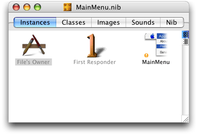
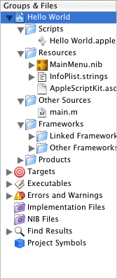
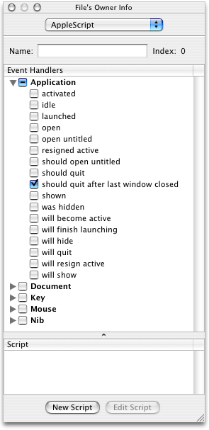

Application Suite
This chapter describes the terminology in AppleScript Studio’s Application suite.
The Application suite defines a number of classes that are typically used by or with an application object, including new versions of certain classes that are defined in the Standard suite. Classes that replace Standard suite classes include the application and window classes. The Standard suite is described in “Script Suites, aetes, and Sdefs.”
The Application suite also defines the item class, which has id and name properties, and the responder class, which inherits from the item class and serves as a superclass for the window, view, and control classes. These and other classes that inherit from responder can respond to user actions.
To work with the many high-level classes it contains, the Application suite defines a large number of commands and event handlers for working with the application, windows, mouse and keyboard events, and so on.
Terminology
The classes, commands, events, and enumerations in the Application suite are described in the following sections:
Classes
The Application suite contains the following classes:
Manages an the main event loop of an application object, as well as resources used by all of the application's objects.
The main purpose of an application object is to receive events and distribute them to the appropriate objects that can respond to them (typically view subclasses). For example, all keyboard and mouse events go directly to the window object associated with the event. In an AppleScript Studio application, these events can be dispatched to script event handlers you connect in Interface Builder. See the responder class for more information about how an application handles mouse and key events.
Every AppleScript Studio (and Cocoa) application has exactly one instance of the application object, created automatically as part of the application project in Xcode. Figure 2-1 shows the File’s Owner instance in the main nib window. In the main nib file, File’s Owner always represents NSApp, a global constant that references the NSApplication object for the application. The application object serves as the master controller for the application. You attach handlers to an application object in Interface Builder through the File’s Owner instance. For more information on nibs and File’s Owners, see the awake from nib command.
Figure 2-1 File’s Owner instance (representing the application object) in an Interface Builder nib window
The application object supplies shared instances of a color-panel, font-panel, open-panel, and save-panel that you can use in your application scripts. For related information, see Choosing Colors With Color Wells and Color Panels. The application object also provides elements for storing items such as image, movie, and sound objects with the application.
Starting in AppleScript Studio version 1.4, the application class provides enhanced coordinate system support. In previous versions, all coordinates for windows and views were returned as a list of four numbers, {left, bottom, right, top}. The origin of a window or bounds was in the bottom left corner. This differs from standard AppleScript, which uses a list of four numbers, {left, top, right, bottom}, with the top left of the window as the origin. To supply a backward compatible mechanism that supports the expected AppleScript way of specifying bounds, the application class now has a coordinate system property, which takes one of the enumerated values specified in Coordinate System.
The default value for the coordinate
system property is classic
coordinate system, which defines bounds as {left,
bottom, right, top} with the origin in the bottom left; that is, it matches the coordinate system in previous versions of AppleScript Studio. For related information, see the bounds property of the window class.
In addition to specifying the coordinate system in a script, you can add the following entry to your application's Info.plist:
<key>ASKCoordinateSystem</key> |
<string>ASKClassicCoordinateSystem</string> |
If a script accesses the bounds and no coordinate system has been specified, AppleScript Studio will look for the ASKCoordinateSystem entry in the main bundle’s Info.plist and will use the specified value.
The Coordinate System sample application, available starting in AppleScript Studio version 1.4, demonstrates this feature.
Properties of application objects
In addition to the properties it inherits from the responder class, an application object has these properties (see the Version Notes section for this class for the AppleScript Studio version in which a particular property was added):
active | ||||
| Access: | read/write | |||
| Class: | boolean | |||
| Is the application active? | ||||
color panel | ||||
| Access: | read/write | |||
| Class: | color-panel | |||
| the color panel for the application; created automatically for every AppleScript Studio application | ||||
coordinate system | ||||
| Access: | read/write | |||
| Class: | enumerated constant from Coordinate System | |||
specifies how bounding rectangles are defined; default is classic coordinate system, which defines bounds as {left, bottom, right, top} with the origin in the bottom left (that is, it matches the coordinate system in previous versions of AppleScript Studio); see also discussion above for the application class | ||||
font panel | ||||
| Access: | read/write | |||
| Class: | font-panel | |||
| the font panel for the application; created automatically for every AppleScript Studio application | ||||
hidden | ||||
| Access: | read/write | |||
| Class: | boolean | |||
Is the application hidden? setting the hidden property to true will set the visible property of all application window objects to false; setting the property back to false will restore the previous visible property settings for the windows | ||||
icon image | ||||
| Access: | read/write | |||
| Class: | image | |||
| the icon for the application; the current default icon shows a pencil, brush, and ruler in the shape of a letter “A”; you can change the application icon by specifying an icon file in Xcode—start by selecting the current target in the Groups & Files list; then open an Info window (with Command-I) and choose the Properties tab; there you can enter a file name in the Icon File field | ||||
key window | ||||
| Access: | read only | |||
| Class: | window | |||
the current key window (the current target for keystrokes; see the key and main properties of the window class for more information) | ||||
main bundle | ||||
| Access: | read/write | |||
| Class: | bundle | |||
| the main bundle of the application; the main bundle is the default location for all application resources, including compiled scripts; it is created automatically by Xcode | ||||
main menu | ||||
| Access: | read/write | |||
| Class: | menu | |||
| the main menu of the application; the menu items on the main menu typically represent other menus; see the Examples section for more information | ||||
main window | ||||
| Access: | read only | |||
| Class: | window | |||
the current main window of the application; the main window is the current focus of user activity; see the key and main properties of the window class for more information) | ||||
name | ||||
| Access: | read only | |||
| Class: | Unicode text | |||
| the name of the application | ||||
open panel | ||||
| Access: | read/write | |||
| Class: | open-panel | |||
| the open panel for the application; created automatically for every AppleScript Studio application | ||||
save panel | ||||
| Access: | read/write | |||
| Class: | save-panel | |||
| the save panel for the application; created automatically for every AppleScript Studio application | ||||
services menu | ||||
| Access: | read/write | |||
| Class: | menu | |||
| the services menu of the application; services allow an application to take advantage of features supplied by other applications, such as spell checking or mailing selected text | ||||
user defaults | ||||
| Access: | read/write | |||
| Class: | user-defaults | |||
the user defaults key-value pairs for the application (see also default entry) | ||||
version | ||||
| Access: | read only | |||
| Class: | Unicode text | |||
| the version of the application, from the short version string; by default, “0” | ||||
windows menu | ||||
| Access: | read/write | |||
| Class: | menu | |||
| the Windows menu of the application; by default, the Windows menu in Interface Builder contains Minimize and Bring All to Front items; in the running application, it also lists each open application window | ||||
Elements of application objects
An application object can contain the elements listed below. Your script can access most elements with any of the key forms described in “Standard Key Forms.” See the Version Notes section for this class for the AppleScript Studio version in which a particular element was added.
data source | ||||
| Specify by: | “Standard Key Forms” | |||
the application’s data sources | ||||
document | ||||
| Specify by: | “Standard Key Forms” | |||
the application’s documents | ||||
drag info | ||||
| Specify by: | “Standard Key Forms” | |||
for internal use by AppleScript Studio only | ||||
event | ||||
| Specify by: | “Standard Key Forms” | |||
the current event—the last event retrieved from the event queue | ||||
image | ||||
| Specify by: | “Standard Key Forms” | |||
the application’s images; by default an application has access to only one image, the default icon image (described in the Properties section above); you can add images (including additional icon images) to a project in Xcode or Interface Builder, but they aren’t added to the application’s elements until you’ve loaded them with the | ||||
item | ||||
| Specify by: | “Standard Key Forms” | |||
for internal use by AppleScript Studio only | ||||
movie | ||||
| Specify by: | “Standard Key Forms” | |||
the application’s movies; by default an application has no movies; you can add movies to the project in Xcode or Interface Builder, but they aren’t added to the application’s elements until you’ve loaded them with the | ||||
pasteboard | ||||
| Specify by: | “Standard Key Forms” | |||
the application’s pasteboards | ||||
sound | ||||
| Specify by: | “Standard Key Forms” | |||
the application’s sounds; by default an application has access to the sounds shown in Figure 2-6 (the available sounds may differ for your system); you can add sounds to the project in Xcode or Interface Builder, but they aren’t added to the application’s elements until you’ve loaded them with the | ||||
window | ||||
| Specify by: | “Standard Key Forms” | |||
the application’s windows | ||||
Commands supported by application objects
Your script can send the following commands to an application object:
display dialog | ||||
path for | ||||
quit (from Cocoa’s Standard suite) |
Events supported by application objects
An application object supports handlers that can respond to the following events. Note that Key and Mouse commands may be handled by other objects without ever propagating their way back to the application object.
Document
document nib name |
Key
keyboard down | ||||
keyboard up |
Mouse
mouse down | ||||
mouse dragged | ||||
mouse entered | ||||
mouse exited | ||||
mouse up | ||||
right mouse down | ||||
right mouse dragged | ||||
right mouse up | ||||
scroll wheel |
Nib
awake from nib |
Examples
The following launched handler, connected to the application object through the File’s Owner instance in Interface Builder, sets the color of the application’s color panel to red and makes the panel visible when the application is launched. AppleScript Studio script statements can refer to application properties without explicitly targeting the application object.
on launched theObject |
set color of color panel to {65535, 0, 0} |
set visible of color panel to true |
end launched |
You can use the following script in Script Editor to get the titles of the menu items in the main menu for the Drag Race application, available at <Xcode>/Examples/AppleScript Studio. Similar statements will work within an AppleScript Studio application script (though you won’t need the tell statements).
tell application "Drag Race" |
title of menu items of main menu |
-- result: {"", "File", "Edit", "Window", "Help"} |
end tell |
Your script can dig down to get information about the menu items of the main menu as well. For example, the following line (inserted in the previous tell statement) gets the title of a menu item in the File menu:
title of menu item 10 of sub menu of menu item 2 of main menu |
-- result: "Page Setup…" |
It can be convenient to use Script Editor (or a third party script application) to target an AppleScript Studio application, as shown here, to help determine the correct terminology for identifying objects in the application, especially in the case where you haven’t given AppleScript names to the objects in Interface Builder. If you did name the menu items, then you could use a line like the following:
title of menu item "page setup" of sub menu item "file" of main menu |
Version Notes
The coordinate system property was added in AppleScript studio version 1.4.
The following elements were added to the application object in AppleScript Studio version 1.2: drag info, pasteboard.
The following properties were added to the application object in AppleScript Studio version 1.1: color panel, font
panel, open panel, save
panel, user defaults.
The following elements were added to the application object in AppleScript Studio version 1.1: data source, item, sound.
Represents a location in the file system that groups code and resources that can be used in a program.
Every application object has a main bundle property that represents the main bundle for that application. Although it is uncommon for AppleScript Studio applications, an application can contain additional bundles.
A bundle object corresponds to a directory where related resources—including executable code—are stored. A bundle can find requested resources in the directory and can dynamically load executable code (though that won’t be necessary for most AppleScript Studio applications). A bundle object has properties that specify its location in the file system, as well as the location of various items within the bundle. You can also use the path for command to obtain the path for items in the application’s bundle.
A bundle can contain images, sounds, localized character strings, and plug-ins. It also contains the application’s Info.plist file, which specifies various information about the application or bundle that can be used at runtime, including document types and version and copyright information. For an example of how to check for the presence of the minimum version of the AppleScript Studio runtime needed by your application, see the Examples section of the will finish launching event handler.
You build a bundle in Xcode using one of these project types: Application, Framework, Loadable Bundle, or Palette. An AppleScript Studio application automatically contains a main application bundle, even if you take no special steps to create one or to specify its contents. Along with an Info.plist file, it contains a Scripts folder (in the Resources folder) that contains the application’s compiled script files, each of which ends with the extension .scpt. For related information, see the Examples section below.
In Mac OS X, you can examine the contents of an application that is built as a bundle by Control-clicking the application icon and choosing Show Package Contents in the resulting contextual menu.
For additional information on working with bundles, see Resource Programming Guide, as well as the path for command.
Properties of bundle objects
In addition to the properties it inherits from the item class, a bundle object has these properties:
executable path | ||||
| Access: | read only | |||
| Class: | Unicode text | |||
| the path to executables in the bundle (by default an AppleScript Studio application has only one executable) | ||||
frameworks path | ||||
| Access: | read only | |||
| Class: | Unicode text | |||
| the path to frameworks in the bundle (a framework is itself a type of bundle that packages software with the resources that software requires, including its interface) | ||||
identifier | ||||
| Access: | read only | |||
| Class: | Unicode text | |||
the identifier for the bundle, which you can specify in the Identifier field in Xcode’s target editor (the details depend on which version of Xcode you are using); typical identifier names look like com.yourcompany.somedirectorylocation.YourAppName; you can see examples in the names of .plist files in ~yourUserName/Library/Preferences | ||||
path | ||||
| Access: | read only | |||
| Class: | Unicode text | |||
the path to the bundle; prior to AppleScript Studio version 1.2.1, you could not use this property directly in a script, though you could obtain its value with a call method command like the following (which gets the path to the main bundle of the application): | ||||
set thePath to call method "bundlePath"
of object main bundle | ||||
resource path | ||||
| Access: | read only | |||
| Class: | Unicode text | |||
the path to resources in the bundle; depending on the location of the AppleScript Studio application, the path might be something like /Users/userName/TestApp/build/TestApp.app/Contents/Resources | ||||
scripts path | ||||
| Access: | read only | |||
| Class: | Unicode text | |||
the path to the scripts in the bundle; depending on the location of the AppleScript Studio application, the path might be something like /Users/userName/TestApp/build/TestApp.app/Contents/Resources/Scripts | ||||
shared frameworks path | ||||
| Access: | read only | |||
| Class: | Unicode text | |||
the path to the shared frameworks in the bundle; depending on the location of the AppleScript Studio application, the path might be something like /Users/userName/TestApp/build/TestApp.app/Contents/SharedFrameworks | ||||
shared support path | ||||
| Access: | read only | |||
| Class: | Unicode text | |||
the path to the shared support items in the bundle; depending on the location of the AppleScript Studio application, the path might be something like /Users/userName/TestApp/build/TestApp.app/Contents/SharedSupport | ||||
Commands supported by bundle objects
Your script can send the following commands to a bundle object:
path for |
Events supported by bundle objects
This class is not accessible in Interface Builder, and you cannot connect any event handlers to it.
Examples
The following clicked handler shows how to use a bundle’s scripts
path property obtain the path to the scripts directory in an application’s main bundle. It uses the log command to display the result.
on clicked theObject |
set thePath to scripts path of main bundle |
log thePath |
end clicked |
Depending on the name and location of the project, the results of the previous handler would be something like the following:
2002-09-03 19:59:56.032 test project[667] "/Volumes/Projects/test project// build/test project.app/Contents/Resources/Scripts" |
The Examples section of the path for command shows how to get the full, slash-delimited path of the compiled main script in an AppleScript Studio application, and how to find and load a script from the application’s main bundle.
The following clicked handler shows how to use the call method command to access an external bundle, in this case the Terminal application that ships with Mac OSX. It uses the log command to display the result. Once you have a reference to the external bundle, you can get information from it through its properties or with the path
for command.
This example uses the call method command to get the path to the bundle because, as noted in the Properties section above, the path property wasn’t supported before AppleScript Studio version 1.2.1. This handler uses a try, on
error block to handle the case where call
method may be unable to return a bundle (if, for example, the Terminal application is not present in the Utilities directory).
on clicked theObject |
set theBundle to call method "bundleWithPath:" of class "NSBundle" |
with parameter "/Applications/Utilities/Terminal.app" |
try |
set thePath to call method "bundlePath" of object theBundle |
log thePath |
on error |
log "Problem getting path to Terminal.app" |
end try |
end clicked |
Note: Starting with AppleScript Studio version 1.2, you can say of
theBundle, rather than of
object theBundle.
The following example shows how to target a bundle outside the application:
on clicked theObject |
set myLibBundle to call method "bundleWithPath:" of class "NSBundle" |
with parameter "/Users/MyUser/MyStudioLib/build/MyStudioLib.app" |
try |
tell myLibBundle |
set scriptPath to path for script "MyStudioLib" |
extension "scpt" |
end tell |
log scriptPath |
on error |
log "Problem getting path to MyStudio.app" |
end try |
end clicked |
Between the examples shown here and the example in the Examples section of the path for command, it is possible to load an external bundle and find and load scripts from the bundle. That means you can package frequently used scripts in a form that is easily accessible to any AppleScript Studio applications you write.
Important: When you load a script, you get a copy of the script, including a new copy of any global properties or variables. AppleScript Studio currently does not provide a convenient way to share data between scripts. You can use files to read and write data, but the overhead is at minimum inconvenient.
The following provides a simple example of how you might do this.
First, create an AppleScript Studio project in Xcode, using the AppleScript Application template. Name the application “MyStudioLib” and, for this example, save it in your user folder (/Users/yourname/). In the main script file for the project, MyStudioLib.applescript, define handlers that return any scripts you want to implement. In this example, there is one handler, named makeLibScript1, which creates a script named acknowledgeReceipt. Although there is no return statement, makeLibScript1 effectively returns the script acknowledgeReceipt.
on makeLibScript1() |
script myLibScript1 |
-- Handlers |
on acknowledgeReceipt() |
display dialog "The acknowledgeReceipt script greets you." |
end acknowledgeReceipt |
end script |
end makeLibScript1 |
Next, build the project, which causes a compiled script named MyStudioLib.scpt to be stored in the application bundle. You can define multiple handlers to return any scripts you want to make accessible from your script library, though this example supplies just one script.
Finally, you can add the following script statements to any AppleScript Studio project that needs to use any of the scripts in your MyStudioLib project. These statements:
define properties (initialized to the constant
missing value) to make scripts accessible throughout the fileimplement a
loadLibraryScriptshandler that loads the script file from the MyStudioLib application and extracts a specific script object from the scriptimplement a
will finish launchingevent handler that simply callsloadLibraryScriptswhen the application is launchedimplement a
clickedhandler to demonstrate how to call a loaded script; your application can make similar calls from throughout its script file
property libraryScript : missing value |
property libScript1 : missing value |
on loadLibraryScripts() |
set scriptPath to missing value |
set myLibBundle to call method "bundleWithPath:" of class "NSBundle" with parameter "/Users/yourname/MyStudioLib/build/MyStudioLib.app" |
-- Log what we got for the bundle. |
log myLibBundle |
-- Use try, on error block to handle possible errors. |
try |
tell myLibBundle |
set scriptPath to path for script "MyStudioLib" extension "scpt" |
end tell |
-- scriptPath is slash-delimited; use POSIX file from the standard |
-- scripting additions to convert it to a colon-delimited path, |
-- which is expected by load script |
set libraryScript to load script POSIX file (scriptPath) |
set libScript1 to makeLibScript1() of libraryScript |
on error |
log "Problem getting library script." |
end try |
end loadLibraryScripts |
on will finish launching theObject |
loadLibraryScripts() |
end will finish launching |
on clicked theObject |
tell libScript1 to acknowledgeReceipt() |
end clicked |
Version Notes
Prior to AppleScript Studio version 1.2.1, you could not use the path property directly in a script, though you could obtain its value with a call method command, as shown above in the description for the path property, and also demonstrated in the Examples section above.
Not supported (through AppleScript Studio version 1.4).
Version Notes
The data class was added in AppleScript Studio version 1.2, although it doesn’t do anything in that version.
Specifies an entry in the Mac OS X user defaults system (a mechanism for storing default values as key-value pairs, where the key is simply a name string).
You use this class in script statements to get, set, or remove the value for an entry in the application-specific defaults, which are typically used to store user preferences for the application.
For more information on the defaults system, see user-defaults, as well as the document User Defaults Programming Topics for Cocoa. You can also view man page information about the defaults system, using the Open Man Page menu from the Help menu in Xcode (available starting with Mac OS X version 10.2) to display defaults, or by typing man defaults in a Terminal window (the Terminal application is located in /Applications/Utilities).
Properties of default entry objects
In addition to the properties it inherits from the item class, a default
entry object has these properties:
content | ||||
| Access: | read/write | |||
| Class: | item | |||
the value of the entry; nearly synonymous with contents; for related information, see the Version Notes section for this class | ||||
contents | ||||
| Access: | read/write | |||
| Class: | item | |||
the value of the entry; nearly synonymous with content; for related information, see the Version Notes section for this class | ||||
Events supported by default entry objects
This class is not accessible in Interface Builder, and you cannot connect any event handlers to it.
Examples
The application class has a user defaults property which you can use to manipulate user defaults entries. For example you could use the following to create a new entry in the user defaults. (An AppleScript Studio application script doesn’t need to explicitly target the application—it’s assumed within the script.)
make new default entry at end of default entries of user defaults with properties {name:"defaultName", contents:"Testing"} |
If you attempt to make a new entry for a key that already exists, no new entry is created and the value for the key is not changed. The assumption is that if the key already exists, it represents a saved value that you may want to preserve. However, you can change the value, if necessary, as shown below.
Defaults information for your application is stored in its plist file. For example, if the identifier for your application (which you set in Xcode) is “com.acme.application”, the previous script statement results in a “defaultName” entry with value “Testing” in the file (where “~/” indicates the path to your user directory)
~/Library/Preferences/com.acme.application.plist |
Warning:
You can use the Property List Editor application, available in Applications/Utilities/, to examine property list files. However, due to a bug, some versions of Property List Editor may display property list information incorrectly. However, you can also examine a property list’s XML in any text editor.
To get the value of any given entry in the user defaults, you simply refer to it by name. For example, given the previous make
new statement, the following line returns the string value “Testing”:
set myName to contents of default entry "defaultName" of user defaults |
Important:
The value of a default entry is Unicode text. Through AppleScript Studio version 1.4, you may be able to coerce a value to a number, but you will have to convert a value to plain text if you want to coerce it to a boolean value. See the Discussion section below for more information.
Attempting to access an entry that doesn’t exist will return an error, so you should enclose statements that access default entries within a try, on error block, as shown in the example in the Discussion section below.
To change a value, you use terminology like the following:
set contents of default entry "defaultName" of user defaults to "Check" |
The following awake from nib handler uses the statement tell user defaults to target the user-defaults property of the application object. After creating a new default entry object, it uses an another tell statement to log the contents of the entry, change the contents, and log the new contents.
on awake from nib theObject |
tell user defaults -- targets property of application |
make new default entry at end of default entries with properties {name:"test", contents:"testing"} |
tell default entry "test" |
log contents as string |
set contents to "completed" |
log contents as string |
end tell |
end tell |
end awake from nib |
The previous handler results in log entries like the following:
2002-08-12 13:46:32.260 Test3[477] "testing" |
2002-08-12 13:46:32.340 Test3[477] "completed" |
For related examples, see user-defaults.
Discussion
The contents of a default entry is Unicode text (as is the value returned by the localized string command). You may need to convert the Unicode text to plain text—for example, to use in a command to another application that expects plain text, or to cast a retrieved string (such as “true” or “false”) to a boolean value. The following handler, from the SOAP Talk sample application, available at <Xcode>/Examples/AppleScript Studio, shows how to convert Unicode text to plain text. SOAP Talk convert strings to plain text because prior to AppleScript 1.9, Applescript’s call
xmlrpc command won’t accept Unicode text.
on getPlainText(fromUnicodeString) |
set styledText to fromUnicodeString as string |
set styledRecord to styledText as record |
return «class ktxt» of styledRecord |
end getPlainText |
The following fragment shows how to get the contents of a default entry, call getPlainText to convert it to plain text, and cast the result to a boolean value. You could use similar statements to convert a numeric string to a number. The try, on
error block deals with possible errors in getting the contents of the entry.
set tempString to contents of default entry "openFile" of user defaults |
try |
set shouldOpen to getPlainText(tempString) as boolean |
if shouldOpen then |
-- Do whatever is needed to open. |
else |
-- Do what is needed when shouldOpen is false |
end |
on error |
display dialog "Error getting should open value." |
end |
As an alternative to converting the Unicode text to plain text, you can compare the text directly, as in this example:
set shouldOpen to contents of default entry "openFile" of user defaults |
try |
if shouldOpen is equal to "true" then |
-- Do whatever is needed to open. |
else |
-- Do what is needed when shouldOpen is false |
end |
on error |
display dialog "Error getting should open value." |
end |
Version Notes
The default entry class was added in AppleScript Studio version 1.1.
Prior to AppleScript Studio version 1.2.1, deleting a default entry could result in a crash.
The content property was added in AppleScript Studio version 1.2. For information on the difference between content and contents, see the Version Notes section for the control class.
The getPlainText handler was added to the SOAP Talk sample application in AppleScript Studio version 1.2.
Contains information about an input action, such as a mouse click or a key down.
Each such user action is associated with a window, and is reported to the application that created the window. The event object contains pertinent information about each event, such as where the mouse was located or which character was typed.
Several event handlers, such as keyboard down, keyboard up, mouse down, and mouse up, include an event parameter that refers to the event object associated with the handler. Within those handlers, you can use that parameter to access the properties described here.
Properties of event objects
In addition to the properties it inherits from the item class, an event object has these properties:
characters | ||||
| Access: | read only | |||
| Class: | Unicode text | |||
| the characters of the event; typically one typed character, such as “a” | ||||
click count | ||||
| Access: | read only | |||
| Class: | integer | |||
| the click count of the event; one for a single-click, two for a double-click, and so on | ||||
command key down | ||||
| Access: | read only | |||
| Class: | boolean | |||
| Is the Command key down? | ||||
context | ||||
| Access: | read only | |||
| Class: | item | |||
| the display context of the receiver (it is not recommended that you use this property) | ||||
control key down | ||||
| Access: | read only | |||
| Class: | boolean | |||
| Is the Control key down? | ||||
delta x | ||||
| Access: | read only | |||
| Class: | real | |||
| the x amount of a scroll wheel event | ||||
delta y | ||||
| Access: | read only | |||
| Class: | real | |||
| the y amount of a scroll wheel event | ||||
delta z | ||||
| Access: | read only | |||
| Class: | real | |||
| the z amount of a scroll wheel event; useful only for input devices that generate such a value | ||||
event number | ||||
| Access: | read only | |||
| Class: | integer | |||
the number of the event; this is a counter your application is unlikely to use; for more information, see the description for the eventNumber method in the NSEvent documentation | ||||
event type | ||||
| Access: | read only | |||
| Class: | enumerated constant from Event Type | |||
| the type of event | ||||
key code | ||||
| Access: | read only | |||
| Class: | integer | |||
| the hardware-dependent value of the key pressed; you aren’t likely to work with the key code and no constants are currently provided to specify key codes; however, you may want to experiment with possible values; (for example, for at least one keyboard, the key code for delete is 51 and for backspace is 117) | ||||
location | ||||
| Access: | read only | |||
| Class: | point | |||
the location in the window where the event happened; the location is returned as a two-item list of numbers {left,
bottom}, where for example, {0,
0} would indicate the window was positioned at the bottom left of the display; see the bounds property of the window class for more information on the coordinate system; for changes introduced in AppleScript Studio version 1.4, see the main discussion for the application class, as well as the coordinate system property of that class | ||||
option key down | ||||
| Access: | read only | |||
| Class: | boolean | |||
| Is the Option key down? | ||||
pressure | ||||
| Access: | read only | |||
| Class: | real | |||
| a value between 0.0 and 1.0 representing the pressure of the input device for the event | ||||
repeated | ||||
| Access: | read only | |||
| Class: | boolean | |||
| Is the event repeated? | ||||
shift key down | ||||
| Access: | read only | |||
| Class: | boolean | |||
| Is the Shift key down? | ||||
time stamp | ||||
| Access: | read only | |||
| Class: | real | |||
| the time that the event occurred, in seconds since system startup (for example, 2542.649003); by comparing their time stamp values, you can determine the elapsed time between two events; see also the Examples section | ||||
unmodified characters | ||||
| Access: | read only | |||
| Class: | Unicode text | |||
| the unmodified characters of the event | ||||
window | ||||
| Access: | read only | |||
| Class: | window | |||
| the window associated with the event | ||||
Events supported by event objects
This class is not accessible in Interface Builder, and you cannot connect any event handlers to it.
Examples
The following mouse down handler shows how to determine, from the passed event parameter, whether the Option key was pressed during the mouse down. Your handler can use such information to determine which actions to perform.
on mouse down theObject event theEvent |
if option key down of theEvent then |
log "the option key was used" |
else |
log "the option key wasn't used" |
end if |
end mouse down |
The following mouse down handler uses the event’s time
stamp property to determine whether a user double-clicked. Of course, you could just connect a double clicked handler to an object if you don’t need this level of control. On the other hand, you may think of other uses for measuring the time between events.
This handler uses a script-global property to keep track of the previous timestamp, initializing it to the constant missing
value to indicate that on startup it has not been set. It assumes that two clicks in less than a second constitutes a double click. Because the time stamp property is a real, you could measure for time in fractions of a second.
property lastTimeStamp : missing value |
on mouse down theObject event theEvent |
if lastTimeStamp is missing value then |
set lastTimeStamp to time stamp of theEvent |
else |
if (time stamp of theEvent) - lastTimeStamp < 1 then |
display alert "You double clicked!" |
else |
set lastTimeStamp to time stamp of theEvent |
end if |
end if |
end mouse down |
Not supported (through AppleScript Studio version 1.4). However, see the Examples section for information on setting fonts in Interface Builder.
Examples
You can set the font family, typeface, size, and color for text field, text view, and related classes in Interface Builder with the Font panel, shown in Figure 2-2.
You can use the Extras pop-up to preview fonts, edit font sizes, open a color panel and choose a color for a font, and perform other operations. The Use Family and Typeface pop-up lets you choose from various preconfigured system fonts.
To make changes for a specific object, such as a text field, you select that object, open the Font panel by navigating to it from the Format menu (or by pressing Command-T), then make your choices.
Controls the formatting of numbers or dates.
A number formatter controls number formatting and a date formatters provide a similar function for dates. For information on specific formatter classes in Cocoa, see NSNumberFormatter and NSDateFormatter.
Figure 2-3 shows a number formatter you can drag from the Cocoa-Text pane of Interface Builder’s Palette window. You can drag either a number formatter or a date formatter from the Palette window into a text field in your AppleScript Studio application to format the text in that field.
Figure 2-4 shows the Formatter pane in Interface Builder’s Info window, where you can adjust the format for a formatter. When you drag a formatter to a text field, Interface Builder automatically switches the Info window to the formatter pane, where you can adjust the format for that field. (You can open the Info window by typing Command-Shift-I.)
You can use these steps to connect an event handler to a formatter object in Interface builder:
put the nib window for the
windowobject that contains the formatter into outline mode by clicking the small outline icon (visible in Figure 2-1) above the right scroll bar.Use the disclosure triangles to open the
windowand other objects until theformatterobject is visible.Select the formatter, then connect the event handler in the AppleScript pane of the Info window.
Events supported by formatter objects
A formatter object supports handlers that can respond to the following events:
awake from nib |
Examples
Through AppleScript Studio version 1.4, formatter objects have no scriptable properties or elements. However you can use the call method command to extract information from a formatter. You can also use call
method to get a reference to a formatter from classes, such as control and cell, that have a formatter property.
The text field class inherits from the control class, so assuming you have added a formatter to a text field and given the text field the AppleScript name “formatted”, you can use the following call to get a reference to the formatter object:
set theFormatter to call method "formatter" |
of (text field "formatted" of window 1) |
Suppose the formatted text currently displayed is “$54.00” and you would like to get that exact string from the text field. The following clicked handler first gets a reference to the formatter, then uses call
method again to call the stringForObjectValue: method of Cocoa’s NSFormatter class to obtain the formatted text from the formatter. The handler uses a try, on
error block to handle errors, and several log statements to log various steps:
on clicked theObject |
tell (window of theObject) |
try |
set theValue to contents of text field "formatted" |
(* get formatter, then formatted text *) |
set theFormatter to call method "formatter" |
of object (text field "formatted") |
log "Got formatter" |
set theString to call method "stringForObjectValue:" |
of object theFormatter with parameter theValue |
log ("Got string: " & theString) |
on error |
log "Error getting formatted text." |
end try |
(* Perform any operations with the formatted text. *) |
end tell |
end clicked |
You can use the call method command to make other calls to methods of Cocoa’s NSFormatter class.
Represents an image.
You don’t typically script an image—instead you work with an image view that contains the image.
The application object has an icon image property to provide access to the application icon, as well as image elements. The button and button cell objects have image and alternate
image properties, which can also be used to store icon images, or any other image. For related information, see the document Cocoa Drawing Guide.
Figure 2-5 shows the Images tab in the default MainMenu.nib window for a new AppleScript Studio application in Interface Builder. The default application icon image is available automatically. You can insert an image view object in an application window by dragging it from the Cocoa-Controls palette. You can then drag an image from the Images tab to the image view. You can also drag an image onto a button.
You can add images to your application by dragging an image file into the Images pane of a nib window in Interface Builder, or by dragging it into the Files list in the Users & Groups pane in the Xcode project for the application. You can then use the load image command to load an image and the image view class to display it. For information on how to free an image, see the Discussion section of the load image command.
Events supported by image objects
Though you can drag an image into an image view in Interface Builder, you cannot connect any event handlers to an image.
Examples
For examples of working with an image object, see the image view class.
Provides a parent class, with name and ID properties, for many other classes. Starting with AppleScript Studio version 1.3, also provides a script property.
Because many classes inherit from the item class, you can attach a script to many types of objects; then, through the script property, you can access the script’s properties, globals, and handlers. There are some current limitations, however—for example, when you access the script of an object, you get a copy of the script object, not a reference to it. As a result, if you need change the value of a property in a script, you will need to get the script, change the property, then set the script back. See the Examples section for an example of how to do this. For an example that uses the script property to add a script to a menu item, see the Examples section for the menu class.
The majority of AppleScript Studio classes descend from the item class, either directly, or through the responder, view, or other subclasses.
The item class in AppleScript Studio is different than the item element of the AppleScript list class. You can use the item class to refer generically to an object that you know inherits from item or one of its subclasses. Suppose, for example, you have a handler that is always passed an object that is a subclass of view or responder. If the handler needs only to access the name or ID property of a passed object, it can treat passed objects as items. You will get an error, however, if you pass the handler an object that does not inherit from the item class.
Similarly, you can use the AppleScript item element to refer generically to any item in a list, though the list may contain different types of objects.
Properties of item objects
An item object has these properties (see the Version Notes section for this class for the AppleScript Studio version in which a particular property was added):
id | ||||
| Access: | read only | |||
| Class: | integer | |||
| the unique id of the object | ||||
name | ||||
| Access: | read/write | |||
| Class: | Unicode text | |||
| the name of the object; you provide an AppleScript name for an object in Interface Builder, as described in the Examples section | ||||
script | ||||
| Access: | read/write | |||
| Class: | script | |||
the script associated with the object; available in AppleScript Studio version 1.3; see the Examples section of this class, as well as the Examples section for the menu class | ||||
Commands supported by item objects
Your script can send the following commands to an item object:
log |
Events supported by item objects
This class is not accessible in Interface Builder, and you cannot connect any event handlers to it.
Examples
It is common to refer to objects by name in AppleScript Studio scripts. For example:
set userInput to contents of text field "input" of window "main" |
You provide an AppleScript name for an object in Interface Builder with these steps:
With the object selected, open the Info window by choosing Show Info from the Tools menu or by typing Command-Shift-I.
Use the pop-up menu at the top of the Info window or (type Command-6) to display the AppleScript pane.
Type the name in the Name field.
You can use the following script in Script Editor to get the ids of every view in every open window of a simple document-based application. For testing purposes, each document window contains a number of buttons and text fields. Similar statements will work within an AppleScript Studio application script (though you won’t need the tell application statement).
tell application "SimpleDocTest" |
id of every view of every window |
end tell |
Running this script with three open windows resulted in the following list of lists, containing one list of ids for each window:
{ {1, 2, 3, 4, 5, 6, 7, 8, 9, 10, 11}, |
{12, 13, 14, 15, 16, 17, 18, 19, 20, 21, 22}, |
{23, 24, 25, 26, 27, 28, 29, 30, 31, 32, 33} } |
You can replace “id” with “name” in the script above to get the AppleScript name of every view (that has a name) in every open window.
For an example that uses item to access items in a list, see the sample script in the Discussion section for the load image command.
The following statements demonstrate how to retrieve a script, change a property of the script, and reset the script:
-- Get a copy of the script |
set buttonScript to script of button 1 of window 1 |
-- Change the value of the foo property |
set foo of buttonScript to "new value of foo" |
-- Update the script with the changed script |
set script of button 1 of window 1 to buttonScript |
Version Notes
The script property was added in AppleScript Studio version 1.3.
Provides a simple interface for loading a QuickTime movie into memory.
You don’t typically script a movie object itself. Instead, you work with the movie view class.
Objects such as application and movie view have movie properties, but movie objects themselves currently have no scriptable properties or elements.
You can add a movie to your application by dragging a movie file into the Files list in the Users & Groups pane in the Xcode project for the application. To use a movie, you load it with the load movie command. For information on freeing movie objects, see the Discussion section for the load image command.
Events supported by movie objects
This class is not accessible in Interface Builder, and you cannot connect any event handlers to it.
Examples
For an example that loads a movie into a movie view, see the Examples section for the movie view class.
Provides an interface to a pasteboard server that supports data transfer between applications, as in copy, cut, paste, or drag-and-drop operations.
The data can be placed on the pasteboard in a variety of representations. A pasteboard is an element of the application object and is analogous to the clipboard, except that there are multiple pasteboards available:
general
font
ruler
find
drag
The font and ruler pasteboards are not used at this time, but may be available in a future release. The general pasteboard is the main pasteboard. To get the contents of the general pasteboard you can use contents of pasteboard "general". You use this same format for the find pasteboard (which is used to set the value for find and replace operations in most applications). The drag pasteboard is used during drag-and-drop event handling.
A given pasteboard can contain a number of format types. The following types are directly supported by AppleScript Studio: “color”, “file”, “file names”, “font”, “html”, “image”, “pdf”, “pict image”, “postscript”, “rich text”, “rich text data”, “ruler”, “string”, “tabular text”, “url”, and “vcard”.
You may see additional pasteboard types that are defined by the system or by other applications. You can determine the types available at any given time for a pasteboard by looking at the types property. For example, if you use the phrase types
of pasteboard "general" you might get a list result like {"rich text",
"string", "NeXT plain ascii pasteboard type",
...}. You might also see other types not defined above (most of which will appear as "CorePasteboardFlavorType
0x54455854").
For related information, see the “Drag and Drop Suite,” as well as the documents Pasteboard Programming Topics for Cocoa, Drag and Drop Programming Topics for Cocoa, and System Services.
Properties of pasteboard objects
In addition to the properties it inherits from the item class, a pasteboard object has these properties:
content | ||||
| Access: | read/write | |||
| Class: | item | |||
| the contents of the pasteboard; see the Discussion section | ||||
contents | ||||
| Access: | read/write | |||
| Class: | item | |||
| the contents of the pasteboard; see the Discussion section | ||||
name | ||||
| Access: | read/write | |||
| Class: | Unicode text | |||
| the name of the pasteboard; one of the values “general”, “font”, “ruler”, “find”, and “drag” | ||||
preferred type | ||||
| Access: | read/write | |||
| Class: | Unicode text | |||
the preferred data type when getting or setting the contents of the pasteboard; one of the type values listed above in the description for this class; starting with AppleScript Studio version 1.3, you can use the preferred type property to set the contents of a pasteboard | ||||
types | ||||
| Access: | read | |||
| Class: | list | |||
| a list of the data types supported by the pasteboard (consisting of type values listed above in the description for this class) | ||||
Events supported by pasteboard objects
This class is not accessible in Interface Builder, and you cannot connect any event handlers to it.
Examples
To get data from a pasteboard, you should first set the preferred
type property of the pasteboard (by default the preferred type will be “string”, but the preferred type may have been changed).To get the data from the general pasteboard as a string, you can use the following:
set preferred type of pasteboard "general" to "string" |
set myString to contents of pasteboard "general" |
To set data for a pasteboard, you should also first set the preferred
type property of the pasteboard. To set the data for the general pasteboard to a string, you can use the following (but see also the Version Notes section for this class):
set preferred type of pasteboard "general" to "string" |
set contents of pasteboard "general" to "Testing" |
You can list the pasteboards for an application with a script such as the following (you can use the same statements within an AppleScript Studio application, but you won’t need the tell block):
tell application "myApp" |
pasteboards |
end tell |
The following will get the types for a pasteboard:
tell application "myApp" |
types of pasteboard "general" |
end tell |
The following awake from nib handler (from the Drag and Drop sample application, available at <Xcode>/Examples/AppleScript Studio) uses the register command to register the drag types an object can respond to.
on awake from nib theObject |
-- Enable support by registering the appropriate types. |
tell theObject to |
register drag types {"string", "rich text", "file names"} |
end awake from nib |
Starting with AppleScript Studio version 1.3, you can use the preferred type property to set the contents of a pasteboard, as shown in the following script statements:
-- In case the default wasn't already "string": |
set preferred type of pasteboard "general" to "string" |
-- Now put a string on the pasteboard: |
set contents of pasteboard "general" to "Testing" |
For additional examples, see the Drag and Drop sample application.
Discussion
You can use the content and contents properties interchangeably, with one exception. Within an event handler, contents
of theObject returns a reference to an object, rather than the actual contents. To get the actual contents of an object (such as the text contents from a text field) within an event handler, you can either use contents
of contents of theObject or content
of theObject.
For a sample script that shows the difference between content and contents, see the Version Notes section for the control class.
Version Notes
Starting with AppleScript Studio version 1.3, you can use the preferred type property to set the contents of a pasteboard, as shown in the Examples section for this class.
The pasteboard class and the Drag and Drop sample application were added in AppleScript Studio version 1.2.
Prior to version 1.2.1, you must do some preparation before you can set the contents of a pasteboard directly with new data. To do so, you invoke the call method command. The parameters to call method should be a list of types (described above) and the owner (usually 0 to represent nil), as shown in the following example:
call method "declareTypes:owner:" of pasteboard "general" |
with parameters {{"string"}, 0} |
set contents of pasteboard "general" to "Testing" |
Provides the basis for event and command processing.
Any class that handles events must inherit from the responder class, as do the application, document, window, and view classes.
Cocoa applications maintain a responder chain, which links together objects that can handle user-generated events and action messages. The first object in the chain is called the first responder. Events include key and mouse events, while action messages specify actions (or calls to methods) to be performed.
In an AppleScript Studio application, Cocoa events and action messages are translated into event handler calls, such as keyboard down, mouse up, clicked, or should zoom, to objects in the application. The default operation of the responder chain may be sufficient for many AppleScript Studio applications.
For objects of certain types, such as application and color well objects, key and mouse event handlers that you connect may never get called because they are handled by other objects before they get to the object. If your application really needs to deal with these events, consider connecting them to objects in the user interface that inherit from the control class, such as button, slider, stepper, or text field objects.
For related information, see the document Introduction to Cocoa Event-Handling Guide.
Properties of responder objects
In addition to the properties it inherits from the item class, a responder object has these properties:
menu | ||||
| Access: | read/write | |||
| Class: | menu | |||
the menu for the responder; for a window object, this is the same as the application’s main menu property; for other objects, it will be undefined unless you have added a contextual menu for that object | ||||
Events supported by responder objects
This class is not accessible in Interface Builder, and you cannot connect any event handlers to it.
Examples
The responder class is an abstract class that you don’t typically target in your scripts. However, see the Examples section for the window class for one situation where you might script a responder. See also the first
responder, key, and main properties of the window class.
Represents a sound that can be loaded and played.
You don’t typically script a sound directly, but you can use the load sound command to load a sound and the play command to play it. You can play any sound files supported by the NSSound class, including AIFF and WAV files. For related information, see the document Sound Programming Topics for Cocoa.
The application object has sound elements, while button and button cell objects have sound properties.
Figure 2-6 shows sounds in a nib window in Interface Builder. You can drag a sound from the Sounds tab to an object that supports sounds, such as a button object.
You can add sounds to your application by dragging a sound file into the Sounds pane of a nib window in Interface Builder, or by dragging it into the Files list in the Users & Groups pane in the Xcode project for the application. To actually play the sound, you will have to load it with the load sound command and play it with the play command. For information on freeing sound objects, see the Discussion section for the load image command.
Properties of sound objects
In addition to the properties it inherits from the item class, a sound object has these properties:
playing | ||||
| Access: | read only | |||
| Class: | boolean | |||
| Is the sound currently playing? | ||||
Commands supported by sound objects
Your script can send the following commands to a sound object:
pause | ||||
play | ||||
resume | ||||
start | ||||
stop |
Events supported by sound objects
Though you can drag a sound onto an object that supports sounds in Interface Builder, you cannot connect any event handlers to it.
Examples
The load sound command provides an example that shows how an application can load and play a sound. The slider class provides an example that uses a slider to let a user set the sound volume.
Version Notes
The playing property was added in AppleScript Studio version 1.1.
Allows a titled window to display a toolbar just below its title bar.
Starting in AppleScript Studio version 1.4, you can create a toolbar and add it to a window in your application by assigning it to the toolbar property of a window object. Figure 2-7 shows such a toolbar, containing several toolbar items. You can only create a toolbar dynamically in your application—you can not currently add a toolbar to a window in Interface Builder.
AppleScript Studio supports various standard toolbar items, such as the print and separator items, listed in the toolbar item class. You can also create custom toolbar items using images you supply.
To respond to user actions involving a toolbar you have created, you use the clicked toolbar item and update toolbar item event handlers in the window class (also added in AppleScript Studio version 1.4).
For related information, see the document Toolbar Programming Topics for Cocoa.
Properties of toolbar objects
In addition to the properties it inherits from the item class, a toolbar object has these properties:
allowed identifiers | ||||
| Access: | read/write | |||
| Class: | list | |||
a list of item identifiers (strings) that specify each toolbar item allowed in this toolbar; it can include identifiers you have defined | ||||
allows customization | ||||
| Access: | read/write | |||
| Class: | boolean | |||
| Can the toolbar be customized? | ||||
auto saves configuration | ||||
| Access: | read/write | |||
| Class: | boolean | |||
| Should the toolbar automatically save its configuration? | ||||
configuration | ||||
| Access: | read/write | |||
| Class: | list | |||
| the configuration for the toolbar; contains the values for the other properties of the toolbar | ||||
default identifiers | ||||
| Access: | read/write | |||
| Class: | list | |||
a list of item identifiers (text strings) for the default toolbar items for this toolbar; see the toolbar item class for the standard values available | ||||
display mode | ||||
| Access: | read only | |||
| Class: | enumerated constant from Toolbar Display Mode | |||
| the display mode for the toolbar (what combination of icons and icons labels to display) | ||||
identifier | ||||
| Access: | read/write | |||
| Class: | Unicode text | |||
| the identifier for the toolbar | ||||
selectable identifiers | ||||
| Access: | read/write | |||
| Class: | list | |||
| a list of item identifiers (strings) that identifies the toolbar items that are selectable in the toolbar | ||||
selected item identifier | ||||
| Access: | read/write | |||
| Class: | Unicode text | |||
| the identifier of the currently selected toolbar item | ||||
size mode | ||||
| Access: | read only | |||
| Class: | enumerated constant from Toolbar Size Mode | |||
| the size mode for the toolbar | ||||
visible | ||||
| Access: | read/write | |||
| Class: | boolean | |||
| Is the toolbar visible? | ||||
Events supported by toolbar objects
You do not connect event handlers to a toolbar. Instead, you use the toolbar handlers supported by the window class, clicked toolbar item and update toolbar item.
Examples
Because a toolbar is associated with a window object, a logical place to create a toolbar and assign it to a window is in the awake from nib event handler for the window. When you create a toolbar in a script, you must supply a unique identifier and specify the configuration for the toolbar, including the allowed and default identifiers. You can do this in several steps. The following script statement shows how you can create a toolbar with the identifier documentToolbar.
set documentToolbar to make new toolbar at end with properties {name:"document
toolbar", identifier:"document toolbar identifier",
allows customization:true, auto
sizes cells:true, display mode:default display mode, size mode:default
size mode}
|
You can use a statement like the following to set the allowed identifiers for the toolbar. In this example, all likely toolbar item identifiers are allowed.
set allowed identifiers of documentToolbar to {"compile item
identifier", "run
item identifier", "stop item identifier", "print
item identifier", "customize
toolbar item identifier", "flexible space item identifier",
"space item identifier",
"separator item identifier"}
|
You can use a statement like the following to set the default toolbar items for the toolbar. In this case, the items are Compile, Run, and Stop items.
set default identifiers of documentToolbar to {"compile item identifier", "run item identifier", "stop item identifier"} |
You will also need to create the toolbar items themselves, and assign them to the toolbar. You can do that with statements like the following, which supply the name, label, tooltip text, and other information for the toolbar item:
make new toolbar item at end of toolbar items of documentToolbar
with properties
{identifier:"compile item identifier", name:"compile
item", label:"Compile",
palette label:"Compile", tool tip:"Compile",
image name:"CompileScript"}
|
make new toolbar item at end of toolbar items of documentToolbar
with properties
{identifier:"run item identifier", name:"run item",
label:"Run", palette
label:"Run", tool tip:"Run", image name:"RunScript"}
|
make new toolbar item at end of toolbar items of documentToolbar
with properties
{identifier:"stop item identifier", name:"stop item",
label:"Stop", palette
label:"Stop", tool tip:"Stop", image name:"StopScript"}
|
Finally, you must assign the toolbar you have created to the window. Assuming you have placed this code in the awake from nib handler for the window, you can use a statement like the following:
set toolbar of theObject to documentToolbar |
These examples are taken from the Simple Toolbar sample application, available in AppleScript Studio version 1.4. For related examples, see the clicked toolbar item and update toolbar item event handlers.
Version Notes
The toolbar class was added in AppleScript Studio version 1.4.
Defines the standard items that can appear in a toolbar.
Support for toolbars was added in AppleScript Studio version 1.4. Figure 2-7 shows a toolbar in a window from the Simple Toolbar sample application. The toolbar items shown are defined by the application. You can only create a toolbar item dynamically in your application—you can not currently add toolbar items to a toolbar in Interface Builder.
When you create a toolbar item, you specify an identifier string for it. In addition to defining toolbar items, your application can use the standard toolbar items specified by these identifiers: “print item identifier”, “customize toolbar item identifier”, “flexible space item identifier”, “space item identifier”, and “separator item identifier”.
For more information, see the document Toolbar Programming Topics for Cocoa.
Properties of toolbar item objects
In addition to the properties it inherits from the item class, a toolbar
item object has these properties:
action method | ||||
| Access: | read/write | |||
| Class: | Unicode text | |||
| the action method for the toolbar item—a string representation of a Cocoa method selector | ||||
enabled | ||||
| Access: | read/write | |||
| Class: | boolean | |||
| Is the toolbar item enabled? | ||||
identifier | ||||
| Access: | read/write | |||
| Class: | Unicode text | |||
| the identifier for the toolbar item | ||||
image | ||||
| Access: | read/write | |||
| Class: | image | |||
| the image for the toolbar item | ||||
image name | ||||
| Access: | read/write | |||
| Class: | Unicode text | |||
| the name of the image to use for the toolbar item | ||||
label | ||||
| Access: | read/write | |||
| Class: | Unicode text | |||
| the label for the toolbar item | ||||
maximum size | ||||
| Access: | read/write | |||
| Class: | point | |||
| the maximum size of the toolbar item; returned as a two-item list of numbers {width, height} | ||||
menu form representation | ||||
| Access: | read/write | |||
| Class: | menu item | |||
| the menu that represents the toolbar item | ||||
minimum size | ||||
| Access: | read/write | |||
| Class: | point | |||
| the minimum size of the toolbar item; returned as a two-item list of numbers {width, height} | ||||
palette label | ||||
| Access: | read/write | |||
| Class: | Unicode text | |||
| the label of the toolbar item shown in the customization panel | ||||
tag | ||||
| Access: | read/write | |||
| Class: | integer | |||
| the tag for the toolbar item | ||||
target | ||||
| Access: | read/write | |||
| Class: | anything | |||
| the target of the action for the toolbar item | ||||
tool tip | ||||
| Access: | read/write | |||
| Class: | Unicode text | |||
| the tooltip text to display for the toolbar item | ||||
toolbar | ||||
| Access: | read/write | |||
| Class: | toolbar | |||
| the toolbar that the toolbar item is in | ||||
view | ||||
| Access: | read/write | |||
| Class: | view | |||
| the view of a custom toolbar item | ||||
Events supported by toolbar item objects
You do not connect event handlers to a toolbar item. Instead, you use the toolbar handlers supported by the window class, clicked toolbar item and update toolbar item.
Examples
You can dynamically change the target and action of a toolbar item in your application or change the Cocoa method that is executed when the action is triggered, as shown in the following example:
set toolbarItem to toolbar item 1 of toolbar of window 1 |
set target of toolbarItem to view "webview" of scroll view 1 of window 1 |
set action method of toolbarItem to "stopLoading:" |
After executing these statements, when you click on the toolbar item, it sends the Cocoa method stopLoading: to the target, which in this case is a web view.
For an example that shows how to create a toolbar, how to add toolbar items to it, and how to respond to actions involving the toolbar items, see the Examples section for the toolbar class. The examples are based on the Simple Toolbar sample application, available in AppleScript Studio version 1.4.
Version Notes
The toolbar item class was added in AppleScript Studio version 1.4.
Provides access to the application’s user defaults values (commonly used to store user preferences for the application).
The user defaults system in Mac OS X stores default values as key-value pairs, where the key is simply a name string. There are several domains for default values. Default values in the global domain are accessible to any application. For example, during development, an application can set a user default value that a debugger checks to determine whether to display certain debug information. Default values in the application domain are commonly used to store preferences information for applications.
When an AppleScript Studio application is launched, it populates the application-specific defaults with all the defaults values it can obtain from both the application domain and the global domain, which contains defaults that apply to all of a user’s applications. So an application can not only add its own defaults entries, it can make changes that override the loaded global defaults within its own domain. For example, the application could change the default date format (see the Examples section for more information). Such changes will not change global defaults for other applications.
Changes to the defaults system are automatically registered periodically, so that the next time the application is launched, the new values will be present.
To access user defaults definitions in your AppleScript Studio scripts, you can use the user defaults property that is associated with every application object. Note that user-defaults is the class name, while user defaults specifies an object of that class.
Warning: You should not delete entries from the user defaults system in AppleScript Studio version 1.2. Doing so may cause your application to crash. This was fixed in version 1.2.1.
For more information on the defaults system, see default entry, as well as the document User Defaults Programming Topics for Cocoa. You can also view man page information about the defaults system, using the Open Man Page menu from the Help menu in Xcode (available starting with Mac OS X version 10.2) to display defaults, or by typing man defaults in a Terminal window (the Terminal application is located in /Applications/Utilities).
Elements of user-defaults objects
An user-defaults object can contain the elements listed below. Your script can access most elements with any of the key forms described in “Standard Key Forms.”
default entry | ||||
| Specify by: | “Standard Key Forms” | |||
the stored default value entries (key-value pairs) | ||||
Events supported by user-defaults objects
This class is not accessible in Interface Builder, and you cannot connect any event handlers to it.
Examples
You can get a list of all of the named default entries with the following script statement. The list includes any entries you’ve added, as well as those provided by the Mac OS, such as “AppleKeyboardUIMode” and “NSDateFormatString”:
set defaultsNames to name of every default entry of user defaults |
Similarly, you can get the values for the entries with the following statement:
set defaultsContents to contents of every default entry of user defaults |
The previous script statements access the user
defaults property of the application object. For related information, see the Examples section for the default entry class.
To use the user defaults system to store and retrieve preferences, your application should follow these guidelines:
Attempt to make new default entries for all preferences before attempting to retrieve the user’s current settings from the defaults system. You make a default entry with a statement like the following:
make new default entry at end of default entries
of user defaults with properties
{name:"defaultName", contents:"Testing"}You don’t have to worry that this will replace any existing user preferences, because if you attempt to make a new entry for a key that already exists, no new entry is created and the value for the key is not changed. (See the
default entryclass for information on how to change an entry when you need to.)A good place to perform this step is in a
will finish launchingevent handler connected to yourapplicationobject. The application object is represented in Interface Builder by the File’s Owner instance in the Instances pane of the MainMenu.nib window. This handler is called just before the application is launched. See the Discussion section for theawake from nibevent handler for information on the order in which event handlers are called on application start up.Once you have set default values for preferences, you should attempt to read any existing user preferences from the user defaults system. You do so with statements like the following:
set myName to contents of default entry "defaultName" of user defaults
Note that the returned value is Unicode text and you cannot simply cast a returned value to a boolean. For information on how to obtain a boolean value, see the Discussion section of the
default entryclass.Your application can make new defaults entries or change existing ones as the user changes their preference settings.
Cocoa applications can call a method,
synchronize, to specifically cause changes to be written out to the user defaults system. AppleScript Studio’sregistercommand was originally intended to serve that purpose, but through AppleScript Studio version 1.4, the command does nothing to register defaults (although it is used as part of drag-and-drop support). However, the Cocoa framework periodically calls thesynchronizemethod, so user defaults in AppleScript Studio applications do get registered.You can also use the
call methodcommand to call Cocoa’ssynchronizemethod directly, as follows:call method "synchronize" of object user defaults
The application should update its state to reflect any preference changes made by the user.
The Archive Maker application, available at <Xcode>/Examples/AppleScript Studio starting with AppleScript Studio version 1.1, provides a detailed example of how to use the user defaults system to work with user preferences.
Version Notes
The user-defaults class was added in AppleScript Studio version 1.1.
Starting with AppleScript Studio version 1.2, you can successfully use lists as a data type with default entries. In AppleScript Studio version 1.1, you could initially assign the contents of a default entry to a list and read it back, but trying to assign a new list to the contents of the default entry would not provide the correct result.
The Archive Maker application, available at <Xcode>/Examples/AppleScript Studio, was first distributed with AppleScript Studio version 1.1.
Prior to AppleScript Studio version 1.2, this document listed register as a command supported by the user-defaults class. In fact, using the register command with a user-defaults object does nothing.
Represents a window on screen.
A window object manages an on-screen window, coordinating the display and event handling for its views. You can create and set up windows in Interface Builder, but you can also control many window properties directly in scripts. Figure 2-8 shows a simple window.
When you create an AppleScript Studio application from the AppleScript Application template in Xcode, the application automatically contains a default window instance, stored in the MainMenu.nib nib file in the project’s Resources group (shown in Figure 2-9). You use this application template for applications that don’t need documents.
When you create an application from the AppleScript Document-based Application template, the application automatically contains a default window instance, stored in the Document.nib nib file. Document-based applications are set up to allow the user to create windows for multiple document instances.
Any application is free to define additional window nibs and to use them to create one or more window instances. You will find several predefined window objects (for windows, panels, and drawers) in the Cocoa-Windows pane of Interface Builder’s Palette window, shown in Figure 3-3.
In Interface Builder’s Info window, you can set many attributes for windows, such as the kind of button controls it contains (Miniaturize, Close, and Resize), its size and resizing properties, and whether it is visible at launch time. To make a floating window (or utility window), for example, you use the window instance labeled “Panel” in Figure 3-3, then open the Attributes pane of the Info window and select the “Utility window” checkbox. In the version of Interface Builder distributed with Mac OS X version 10.2, you can even set the Textured Window attribute to specify the brushed-metal look for a window.
Figure 2-9 The Files list in the Groups & Files list in a non-document AppleScript Studio project
In some cases, such as for a progress panel, you may only instantiate the window once, then show and hide it as needed (using either the show and hide commands, or by directly setting the window’s visible property).
In other cases, you may want to instantiate a new window repeatedly and free it when the user is done with it (which you can do by setting the window’s released when closed property in Interface Builder). The Mail Search application, available at <Xcode>/Examples/AppleScript Studio, provides nibs and code for creating a one-time status panel, as well as a message window that is instantiated multiple times. (Prior to AppleScript Studio version 1.1, Mail Search was named Watson.)
For more information, see the document Window Programming Guide for Cocoa.
Properties of window objects
In addition to the properties it inherits from the responder class, a window object has these properties (see the Version Notes section for this class for the AppleScript Studio version in which a particular property was added):
alpha value | ||||
| Access: | read/write | |||
| Class: | real | |||
| the alpha value of the window; a value of 1.0 (the default) indicates the window is completely opaque, while 0.0 indicates the window is completely transparent; the following statement sets a value in the middle: | ||||
set alpha value of window "main"
to 0.5 | ||||
associated file name | ||||
| Access: | read/write | |||
| Class: | Unicode text | |||
| the file name associated with the window; for a new, unsaved window, returns an empty string; for a window with an associated file, returns the full, POSIX-style (slash-delimited) path | ||||
auto display | ||||
| Access: | read/write | |||
| Class: | boolean | |||
| Automatically display the window? prior to AppleScript Studio version 1.2.1, you could not use this property in a script | ||||
background color | ||||
| Access: | read/write | |||
| Class: | RGB color | |||
| the background color of the window; by default, {65535, 65535, 65535}, or white; not supported prior to AppleScript Studio version 1.2; after setting the background color, the new color will not become visible until the window is updated (via script or user interaction); see the Examples section for an example | ||||
bounds | ||||
| Access: | read/write | |||
| Class: | bounding rectangle | |||
the position and size of the window; the bounds property is returned as a four-item list of numbers, {left,
bottom, right, top}; for example, {0,
0, 500, 250} would indicate the window has its origin at the bottom left of the display, with a top right corner of 500, 250; | ||||
| you can set a location or a bounds with real numbers (for example, {0.5, 0.5, 501.75, 250.1}), but the values returned from AppleScript Studio will always be rounded to whole numbers; | ||||
in this coordinate system, the origin is at the left, bottom and x, y values increase to the right and up, respectively; note that this is different than the Finder, which returns bounds as {left,
top, right, bottom}, with the origin in the left, top and values increasing to the right and down | ||||
for changes introduced in AppleScript Studio version 1.4, see the main discussion for the application class, as well as the coordinate system property of that class | ||||
can hide | ||||
| Access: | read/write | |||
| Class: | boolean | |||
Can the window be hidden? default is true; overrides the visible property (that is, if can hide is false, setting the visible property to false will not hide the window) | ||||
content view | ||||
| Access: | read/write | |||
| Class: | anything | |||
the content view of the window; the superview of all other views in the window; the content view is inserted automatically; you don’t typically interact with it in your scripts; you may be able to switch out the entire contents of a view by changing its content view—however, this is not recommended, and you can get a similar result by working with the tab view and tab view item classes | ||||
current text editor | ||||
| Access: | read only | |||
| Class: | text view | |||
the current field editor of the window; see the field
editor property of the text class for a description of an editor | ||||
document edited | ||||
| Access: | read/write | |||
| Class: | boolean | |||
Has the document associated with the window been edited? (starting with AppleScript Studio version 1.2, the window class has a document element); defaults to false if the window doesn’t have an associated document; equivalent to the modified property of the document class | ||||
excluded from windows menu | ||||
| Access: | read/write | |||
| Class: | boolean | |||
Is the window excluded from the Windows menu? default is false | ||||
first responder | ||||
| Access: | read/write | |||
| Class: | responder | |||
the first responder for the window (the first object in the responder chain to respond to user keystrokes or other actions); see also the Examples section for this class; through AppleScript Studio version 1.2, you could effectively only set this property—getting it would not return a useful object; starting in AppleScript Studio version 1.3, typically returns a value such as current
field editor of window 1; see the field
editor property of the text class for a description of an editor | ||||
has resize indicator | ||||
| Access: | read/write | |||
| Class: | boolean | |||
Should the window have a resize indicator? default is true; you can set this property in the Info window in Interface Builder | ||||
has shadow | ||||
| Access: | read/write | |||
| Class: | boolean | |||
| Should the window have a shadow? | ||||
hides when deactivated | ||||
| Access: | read/write | |||
| Class: | boolean | |||
Should the window be hidden when it is deactivated? if so, switching to another application will cause the window to be hidden; default is false; commonly used with utility windows (a special type of window described in the main description for this class); you can set this property in the Info window in Interface Builder | ||||
key | ||||
| Access: | read/write | |||
| Class: | boolean | |||
Is the window the key window? the key window is the current target for keystrokes; compare to the first
responder and main properties | ||||
level | ||||
| Access: | read/write | |||
| Class: | integer | |||
| the window’s level; by default, set to 0; for more information, see the Discussion section for this class | ||||
main | ||||
| Access: | read/write | |||
| Class: | boolean | |||
Is the window the main window? the main window is the current focus of user activity; a window is often both key and main, but need not be; for example, a document window in a text editor may be the main window and key window, but when a user opens a find dialog, that dialog becomes the key window; after the user enters text and initiates a successful search, the document window again becomes both the main and key window; compare to the key property | ||||
maximum size | ||||
| Access: | read/write | |||
| Class: | point | |||
| the maximum size of the window as a two-item list of numbers {max width, max height}; prior to AppleScript Studio version 1.2.1, you could not use this property in a script | ||||
miniaturized | ||||
| Access: | read/write | |||
| Class: | boolean | |||
| not supported (through AppleScript Studio version 1.4); Is the window miniaturized? (synonymous with minimized—reduced to an icon in the Dock) | ||||
minimized image | ||||
| Access: | read/write | |||
| Class: | image | |||
the image for the window when it is minimized; window objects may not have a minimized image, so you may get missing
value if you attempt to get this property; see the Examples section for an example of how to set the property | ||||
minimized title | ||||
| Access: | read/write | |||
| Class: | Unicode text | |||
the title of the window when it is minimized; this title shows up when you move the cursor over the minimized window icon in the Dock; by default, the same as the title property | ||||
minimum size | ||||
| Access: | read/write | |||
| Class: | point | |||
| the minimum size of the window as a two-item list of numbers {min width, min height}; prior to AppleScript Studio version 1.2.1, you could not use this property in a script | ||||
needs display | ||||
| Access: | read/write | |||
| Class: | boolean | |||
Should the window be displayed? setting this property to true causes the window to be redrawn; you can also use the update command to update a view; see also the update display property of the data source class | ||||
prior to AppleScript Studio version 1.2.1, you could not use this window property in a script, but you could use the needs
display property of the view class | ||||
opaque | ||||
| Access: | read/write | |||
| Class: | boolean | |||
Is the window opaque? default is true; Cocoa considers opacity when drawing a window and its views (see the document Cocoa Drawing Guide for more information), but most applications won’t need to use this property; to make a window transparent, you use the alpha value property | ||||
position | ||||
| Access: | read/write | |||
| Class: | point | |||
the position of the window; the position is returned as a two-item list of numbers {left, bottom}; for example, {0, 0} would indicate the bottom, left corner of the window was positioned at the bottom left of the display; see the bounds property for more information on the coordinate system; for changes introduced in AppleScript Studio version 1.4, see the main discussion for the application class, as well as the coordinate system property of that class | ||||
released when closed | ||||
| Access: | read/write | |||
| Class: | boolean | |||
Should the window be released (equivalent to freed) when it is closed? default is false; you can set this value in Interface Builder; in some circumstances, you may prefer not to release a window but to hide it (with the hide command or by setting its visible property to false), then show it again (with the show command or by setting its visible property to true) when needed; once a window is released, you will have to create another instance from its nib file it to use it again—if you intend to do this, you may want to store that window in a separate nib, then load the nib with load nib when you want to open a new copy of the window | ||||
sheet | ||||
| Access: | read only | |||
| Class: | boolean | |||
| Is the window a sheet? (that is, attached to another window) | ||||
size | ||||
| Access: | read/write | |||
| Class: | point | |||
the size of the window; the size is returned as a two-item list of numbers {horizontal, vertical}; for example, {200,
100} would indicate a width of 200 and a height of 100; see the bounds property for information on the coordinate system; for changes introduced in AppleScript Studio version 1.4, see the main discussion for the application class, as well as the coordinate system property of that class | ||||
title | ||||
| Access: | read/write | |||
| Class: | Unicode text | |||
| the title of the window | ||||
toolbar | ||||
| Access: | read/write | |||
| Class: | toolbar | |||
the toolbar for the window; window objects may not have a toolbar, so you may get missing value if you attempt to get this property; see the Examples section of the toolbar class for an example of how to set the property | ||||
visible | ||||
| Access: | read/write | |||
| Class: | boolean | |||
Is the window visible? default is true for the main window, but false for additional windows you add in Interface Builder; you can set this value in Interface Builder; see released when
closed property for related information; setting the hidden property of an application to true will set the visible property of all application windows to false, unless the can hide property is false, in which case it will have no effect | ||||
zoomed | ||||
| Access: | read/write | |||
| Class: | boolean | |||
| Is the window zoomed? | ||||
Elements of window objects
A window object can contain the elements listed below. Your script can access most elements with any of the key forms described in “Standard Key Forms.”
box | ||||
| Specify by: | “Standard Key Forms” | |||
the window’s boxes | ||||
browser | ||||
| Specify by: | “Standard Key Forms” | |||
the window’s browsers | ||||
button | ||||
| Specify by: | “Standard Key Forms” | |||
the window’s buttons | ||||
clip view | ||||
| Specify by: | “Standard Key Forms” | |||
the window’s clip views; not supported for windows (through AppleScript Studio version 1.4); a | ||||
color well | ||||
| Specify by: | “Standard Key Forms” | |||
the window’s color wells | ||||
combo box | ||||
| Specify by: | “Standard Key Forms” | |||
the window’s combo boxes | ||||
control | ||||
| Specify by: | “Standard Key Forms” | |||
the window’s controls | ||||
document | ||||
| Specify by: | “Standard Key Forms” | |||
the window’s document; provides access to a document from within the application’s user interface | ||||
drawer | ||||
| Specify by: | “Standard Key Forms” | |||
the window’s drawers | ||||
image view | ||||
| Specify by: | “Standard Key Forms” | |||
the window’s image views | ||||
matrix | ||||
| Specify by: | “Standard Key Forms” | |||
the window’s matrixes | ||||
movie view | ||||
| Specify by: | “Standard Key Forms” | |||
the window’s movie views | ||||
popup button | ||||
| Specify by: | “Standard Key Forms” | |||
the window’s popup buttons | ||||
progress indicator | ||||
| Specify by: | “Standard Key Forms” | |||
the window’s progress indicators | ||||
scroll view | ||||
| Specify by: | “Standard Key Forms” | |||
the window’s scroll views | ||||
secure text field | ||||
| Specify by: | “Standard Key Forms” | |||
the window’s secure text fields | ||||
slider | ||||
| Specify by: | “Standard Key Forms” | |||
the window’s sliders | ||||
split view | ||||
| Specify by: | “Standard Key Forms” | |||
the window’s split views | ||||
stepper | ||||
| Specify by: | “Standard Key Forms” | |||
the window’s steppers | ||||
tab view | ||||
| Specify by: | “Standard Key Forms” | |||
the window’s tab views | ||||
table header view | ||||
| Specify by: | “Standard Key Forms” | |||
the window’s table header views | ||||
table view | ||||
| Specify by: | “Standard Key Forms” | |||
the window’s table views | ||||
text field | ||||
| Specify by: | “Standard Key Forms” | |||
the window’s text fields | ||||
text view | ||||
| Specify by: | “Standard Key Forms” | |||
the window’s text views | ||||
view | ||||
| Specify by: | “Standard Key Forms” | |||
the window’s views | ||||
Commands supported by window objects
Your script can send the following commands to a window object:
center | ||||
close (from Cocoa’s Standard suite) | ||||
hide | ||||
print (from Cocoa’s Standard suite) | ||||
register | ||||
save (from Cocoa’s Standard suite) | ||||
show | ||||
update |
Events supported by window objects
A window object supports handlers that can respond to the following events:
Nibawake from nib |
Panel
alert ended | ||||
dialog ended | ||||
panel ended |
Window
Examples
Applications may need to perform additional initialization before showing the main window. One place you can do so is in the launched event handler, which is called when the application is finished launching (and after the awake from nib handler—another possible choice for performing additional initialization).
You can set a window’s visible property to false in Interface Builder, then set it to true in the launched handler (as shown here) to show the window. For a more complete example, see the Assistant sample application, available at <Xcode>/Examples/AppleScript Studio (starting with AppleScript Studio version 1.1). The startup-time calling order for application event handlers, including the launched handler, is listed in the description for the awake from nib event handler.
This script assumes the window has the AppleScript name “main”, which you set in the AppleScript pane of Interface Builder’s Info window.
on launched theObject |
-- Perform any initialization before making window visible |
-- ... |
set visible of window "main" to true |
end launched |
Many common user interface classes (including subclasses of the control class) inherit from the view class, which has a window element that identifies the window that contains the view. AppleScript Studio event handlers typically have a parameter that specifies the object for which the handler is called. If the object is an instance of a class that inherits from view (as it generally is), you can conveniently do the following, shown in a clicked handler, to get access to the current window:
on clicked theObject |
set theWindow to window of theObject |
--Use the reference to the enclosing window as needed in the handler. |
end clicked |
To give the keyboard focus to an object such as a text field, you set the first responder property of its window to the object; for example, you could use the following line to give keyboard focus to a named text field:
set first responder of window 1 to text field "myText" of window 1 |
The following script statements set a window’s background color to green and make the new color visible:
set background color of window "main" to {0, 65535, 0} |
tell window "main" to update |
The following script shows how to set a window’s minimized image. The script first chooses an image file, then loads the image and sets the minimized image for the window.
tell application "StudioTest" |
set imagePath to POSIX path of (choose file) |
set minImage to load image imagePath |
set minimized image of window 1 to minImage |
end tell |
Discussion
The stacking of windows depends on window level— windows at a higher level are shown in front of those at a lower level; windows at the same level can be displayed in front of or behind each other, but they cannot be displayed behind a window at a lower level.
Through version 1.3 AppleScript Studio does not define enumerated constants for setting window level, but as a convenience, Table 2-1 shows the current values for Cocoa’s window level constants. You can use the values, but not the constants, in your scripts. Be aware that using these hard-coded values is not guaranteed to work in future versions of AppleScript Studio.
Cocoa window-level constant |
Value |
|---|---|
|
0 |
|
3 |
|
3 |
|
3 |
|
8 |
|
20 |
|
24 |
|
101 |
|
1001 |
Version Notes
The toolbar property and the clicked toolbar item and update toolbar item events were added in AppleScript Studio version 1.4.
Starting in AppleScript Studio version 1.3, you can access many of the properties that are defined for the window class in Cocoa’s Standard suite, such as titled.
Starting in AppleScript Studio version 1.3, the first
responder property returns an object such as current field editor of window 1. Previously, it did not return any useful object.
The miniaturized property is not supported, through AppleScript Studio version 1.4:
The clip view element is not supported, through AppleScript Studio version 1.4.
Support for the current field editor property was added in AppleScript Studio version 1.2.1.
Support for the following properties was added in AppleScript Studio version 1.2.1 (you could not use them in version 1.2):
auto displaymaximum sizeminimum sizeneeds display
Support for the background color property was added in AppleScript Studio version 1.2.
Support for the center, hide, and show commands was added in AppleScript Studio version 1.2.
Support for the will open and will zoom event handlers was added in AppleScript Studio version 1.2.
Support for the Textured Window attribute, which you can use to specify the brushed-metal look, was added to the version of Interface Builder distributed with Mac OS X version 10.2.
Commands
Objects based on classes in the Application suite support the following commands. (A command is a word or phrase a script can use to request an action.) To determine which classes support which commands, see the individual class descriptions.
Provides a mechanism for calling methods of Objective-C objects from an application script.
With the call method command, you can easily access Objective-C code you have written, or use Cocoa features that aren’t currently exposed through AppleScript Studio’s scripting terminology.
See the description for the document class for details on how to use Xcode (and an AppleScript Studio project) to find Cocoa class, method, and constant information you can use with the call method command.
Syntax
call method |
string | required | |
of |
item | optional | |
of class |
Unicode text | optional | |
of object |
item | optional | |
with parameter |
item | optional | |
with parameters |
list | optional | |
Parameters
The name of the method to call.
The object to send the method to. The
ofparameter was added in AppleScript Studio version 1.2, and can be used instead of theof objectparameter if your application does not need to run with earlier versions.You never use both
of(orof object) andof class. If you don’t specify either, the call goes to a method of the application’s delegate object or, if the delegate doesn’t support it, to theapplicationobject itself.Several classes in Cocoa use delegates, or helper objects, which can step in and perform operations for the class that uses the delegate. Delegates provide a convenient way to customize the behavior of a class without creating a new subclass. If you’re not writing Cocoa code, you probably don’t need to know anything more about delegates, but if you’re interested, you will find more information in Using Window Notifications and Delegate Methods.
The class to send the method to. You never use both
of(orof object) andof class.The object to call the method of. If your application needs to run with versions earlier than AppleScript Studio version 1.2, use
of objectinstead ofof.Specifies a parameter to be passed to the called method. Use this parameter for a method that takes a single parameter. You can use the parameter to pass an object or a simple value such as an integer. You can also pass a single list, which can contain multiple items, but only if the called method expects a single parameter that encompasses multiple values, such as an array or dictionary. (Arrays and dictionaries are Cocoa types, based on the
NSArrayandNSDictionaryclasses.)Specifies a list of parameters to be passed to the called method. Intended for use with methods that have more than one parameter, though you can also use it for a method with a single parameter. You specify a list with one item for each parameter of the specified method. An item within the list of parameters can be a list, if the called method expects a single parameter that encompasses multiple values in that position.
You never use both
with parameterandwith parameters. If you don’t use either, it is assumed the method has no parameters.You must use the
with parametersparameter to pass a boolean value, even though it is a single parameter. You pass the boolean value as a single-item list. For example, to set the scrollable property of a matrix, you could use this statement:call method "setScrollable:" of matrix 1 of window 1 with parameters {true}
of itemof class Unicode textof object itemwith parameter itemwith parameters listResult
- anything
The return value depends on the method that is called. The
call methodcommand can return the Cocoa types NSRect, NSPoint, NSSize, and NSRange, in addition to primitive types such asint,double,char *, as well as pointers to Cocoa objects and so on. Table 2-2 lists Cocoa types typically returned by thecall methodcommand and their AppleScript equivalents. You should use atry,on errorblock when working with the result (as shown in the Examples section for thepath forcommand).Table 2-2 Cocoa types and their AppleScript equivalents Cocoa type
AppleScript equivalent
list
date
record
list of two numbers:
{x, y}list of two numbers:
{begin offset, end offset}list of four numbers:
{left, bottom, right, top}list of two numbers:
{width, height}string
Examples
The following is a method declaration from Cocoa’s NSDocument class:
- (Bool) readFromFile: (NSString *) |
fileName ofType: (NSString *) docType |
This method has two parameters, so to call it with the call
method command, you use the with
parameters option. In the following example, the list consists of the two string variables (whose values you have set prior to the call) enclosed in curly brackets: {myFilenameString,
myDocTypeString}.
call method "readFromFile:ofType:" of (document 1 of window 1) |
with parameters {myFilenameString, myDocTypeString} |
The following example calls the performClick: method of a button object, passing as a parameter another button object (enclosed in parentheses because it is a multi-term reference).
call method "performClick:" of (button 1 of window 1) |
with parameter (button 2 of window 2) |
If your application will run with versions of AppleScript Studio before version 1.2, you should use the of
object parameter. Here is how you would do so for the previous example.
call method "performClick:" of object (button 1 of window 1) |
with parameter (button 2 of window 2) |
The following example calls a class method of NSNumber to get back a number object initialized with an integer value. It passes a single value (the number 10) for its one parameter. In this case, the parameter is unambiguous, and does not require parentheses
set theResult to call method "numberWithInt:" of class "NSNumber" |
with parameter 10 |
To call the NSView method -
(void) setFrame: (NSRect) frameRect, you use a script statement similar to the following (where the single parameter is a list that specifies the frame):
call method "setFrame:" of (view 1 of window 1) |
with parameter {20, 20, 120, 120} |
For more examples that use the call method command, see the Examples sections of the bundle class and the will finish launching event handler.
Version Notes
The of parameter was added in AppleScript Studio in version 1.2 to take the place of the of object parameter. Both are supported, but of is preferred. This can lead to clearer scripts. For example, instead of call method "title" of object
(window 1) you can now use call
method "title" of window 1. However, if your application must run with versions of AppleScript Studio prior to version 1.2, you will have to use the of
object form.
Starting with AppleScript Studio in version 1.2, the call
method command supports the double data type. In previous versions a double would be interpreted as an integer.
The call method command had severe limitations in AppleScript Studio version 1.0, including misinterpreting objects specified in the with
parameter and with parameters parameters, and an inability to correctly return Cocoa class objects.
Centers a window on screen.
For more information on windows, see the document Window Programming Guide for Cocoa.
Syntax
center |
reference | required | |
Parameters
a reference to the
windowobject that receives thecentercommand
Examples
The following clicked handler for a button object centers the window on which the button resides. The window is centered with respect to the device on which it is currently displayed.
on clicked theObject |
tell window of theObject to center |
end clicked |
Version Notes
The center command was added in AppleScript Studio version 1.1.
Hides the object, if it is visible.
Only window objects can hide. Hiding a window has the same effect as setting its visible property to false, unless the window’s can hide property is set to false, in which case the hide command will have no effect.
You cannot connect the was hidden or will hide event handlers to a window object. Those event handlers apply only to the application object and are called only when the application is hidden as a result of a user choosing Hide from the application menu or pressing Command-h.
For more information on windows, see the document Window Programming Guide for Cocoa.
Syntax
hide |
reference | required | |
Parameters
a reference to the
windowobject that receives thehidecommand
Examples
The following clicked handler shows how to hide a window, specifying the window in one of two ways.
on clicked theObject |
--Next line hides the window that contains the clicked object. |
--If you hide the current window, be sure you have a reference |
-- to it so you can make it visible again! |
tell window of theObject to hide |
--Next line would hide a window specified by name. |
-- tell window "second" to hide |
end clicked |
Hiding a window is equivalent to setting its visible property to false. The following statement has the same result as telling the window to hide (unless the window’s can hide property is set to false, in which case the hide command will have no effect):
set visible of window "second" to false |
Loads the specified image.
You typically load an image as an image object and display it in an image view. The application object can contain image elements. Classes such as button, cell, drag info, menu item, and slider can have associated images.
You can load images of any type supported by Cocoa’s NSBitmapImageRep class. That includes JPEG, PNG, GIF, TIFF, BMP, PICT, EPS, and PDF. You can store images in your AppleScript Studio project with the Add Files… command from the Project menu. You can also drag image files from the Finder into one of the groups (typically the Resources group) in the Files list in Xcode’s Groups & Files list. You can also drag images into the Images pane of a nib window in Interface Builder.
For related information, see the documents Cocoa Drawing Guide and Image Views.
Syntax
load image |
string | required | |
Parameters
specifies the image to be loaded; see Examples for more information
Examples
If an image is part of your project, you can load it by specifying its name, excluding the file extension. For example, if the file starryNights.tiff is stored in your project and you have an image view with the AppleScript name “artImages” in a window with the name “artWindow”, you can load the image and make it the current image with the following statements:
set artImage to load image "starryNights" |
set image of image view "artImages" of window "artWindow" to artImage |
You could also perform this operation in one statement:
set image of image view "artImages" of window "artWindow" to load image "starryNights" |
Note that (through AppleScript Studio version 1.4) to load a TIFF image from the project without specifying the extension, the extension must be “tiff” not “tif”.
If an image is not part of your project, you can load it by specifying a POSIX (slash-delimited) path to the image file. For example, if sunFlowers.png is stored on disk in /User/Me/Images, you could load the image with the following statement:
set image of image view "artImages" of window "artWindow" to load image "/User/ Me/Images/sunFlowers.png" |
For an example that deletes an image, see the following Discussion section.
Discussion
The image object returned by the load image command is retained. In Cocoa, all objects have a retain count. Retaining increases the count; releasing decreases it. When the count reaches 0, the object is disposed of. An object returned by one of the load commands has a retain count of 1.
For most objects you use in an AppleScript Studio application, you don’t need to worry about retaining or releasing the object. However, if you make multiple calls to load
image (or load movie or load sound) and don’t release the image (or movie, or sound), your application memory usage will increase. To avoid this problem, you can explicitly delete an image (or movie or sound if it isn’t a system sound) when you are finished with it. Deleting an image (or movie or sound) deletes it from the list of images (and so on) kept by the application and releases it, so that when the retain count reaches 0 the object will be released. Note that if you delete an image that is currently displayed in an image view, it will not actually be freed until the image view is done with it.
The following script sample shows how an application could find all the images of a certain type stored in the application, then use an idle handler to switch the image in an image view every two seconds. Each time an image is loaded, the previous image is deleted to free the memory it uses.
The launched handler uses the call method command to call a method of the application’s main bundle and obtain a list (stored as a property) of all the JPEG images in the application bundle. The first parameter specifies the file extension to look for; the second parameter specifies the bundle directory to search—passing an empty string specifies a search of all directories. The handler stores the count of found images as a property.
If there are any images, the idle handler loads the next image (possibly the first), saves a reference to the old image, sets the new image in the image view (to display it), and frees the old image. If there is only one image, the idle handler doesn’t bother to keep reloading it.
property imagePaths : {} |
property imageCount : 0 |
property imageIndex : 0 |
on launched theObject |
-- Get the path to all of the JPEG images in the application |
set imagePaths to call method "pathsForResourcesOfType:inDirectory:" |
of main bundle with parameters {"JPG", ""} |
try |
set imageCount to count of imagePaths |
log imageCount |
end try |
end launched |
on idle theObject |
-- If we have some images |
if imageCount > 0 then |
-- Only load an image if this is the first, |
-- or if we have more than one to cycle through. |
if (imageCount > 1) or (imageIndex is equal to 0) then |
-- Adjust the count |
set imageIndex to imageIndex + 1 |
if imageIndex > imageCount then |
set imageIndex to 1 |
end if |
-- Load the new image |
set newImage to load image (item imageIndex of imagePaths) |
-- Get a reference to the old image, if there is one |
set oldImage to image of image view "image" of window "main" |
-- Set the new image |
set image of image view "image" of window "main" to newImage |
-- Delete the old image (use try block in case no image) |
try |
delete oldImage |
end try |
end if |
end if |
-- Return 2 to call idle routine again in 2 seconds. |
return 2 |
end idle |
Version Notes
In AppleScript Studio version 1.0, the load
image command would not load an image that was not part of the Xcode project for the application. Starting with AppleScript Studio version 1.1, load image will load such an image, given a POSIX style (slash-delimited) path to the image. Paths that you obtain from the bundle class are in this format.
You can obtain a POSIX style path to a file or alias object using the path to command and the POSIX path property, both of which are provided by AppleScript’s Standard Additions. For example:
set thePath to path to desktop |
--result: alias "MacOSX:Users:BigCat:Desktop:" |
set POSIXpath to POSIX path of thePath |
--result: "/Users/BigCat/Desktop/" |
You can examine the terminology for AppleScript’s Standard Additions by opening the file /System/Library/ScriptingAdditions/StandardAdditions.osax with Xcode, Script Editor, or another application that can display scripting dictionaries.
Loads the specified QuickTime movie.
You typically load a movie as a movie object and display it in a movie view. The application object can contain movie elements.
See the movie view class for a list of the commands you can use to control a movie. For information on how to free a movie, see the Discussion section of the load image command.
Syntax
load movie |
string | required | |
Parameters
specifies the movie to be loaded
Examples
If a movie is part of your project, you can load it by specifying its name, excluding the file extension. For example, if the file bdayparty4.mov is stored in your project and you have a movie view with the AppleScript name “movies” in a window with the name “homeMovies”, you can load the movie and make it the current movie with the following statements:
set currentMovie to load movie "bdayparty4" |
set movie of movie view "movies" of window "homeMovies" to currentMovie |
You could also perform this operation in one statement:
set movie of movie view "movies" of window "homeMovies" to load movie "bdayparty4" |
If a movie is not part of your project, you can load it by specifying a POSIX path to the movie file. For example, if bdayparty4.mov is stored on disk in /User/Me/Movies, you could load the movie with the following statement, instead of the one shown above:
set movie of movie view "movies" of window "homeMovies" to load movie "/User/Me/ Movies/bdayparty4.mov" |
Version Notes
In AppleScript Studio version 1.0, the load
movie command would not load a movie that was not part of the Xcode project for the application. Starting with AppleScript Studio version 1.1, load movie will load such a movie, given a POSIX style path to the movie.
Loads the specified nib (or user interface resource file).
Starting with AppleScript Studio version 1.1, you should use the load nib command instead of the load panel command to load a panel (as shown in the Examples section below).
You create nib files in Interface Builder. For more information on nib files, see awake from nib.
Syntax
load nib |
string | required | |
Parameters
specifies the nib file to be loaded, without the
.nibextension
Examples
A nib file stores a description of one or more user-interface objects, including their sizes, locations, and connections to other objects. Loading a nib file unarchives (or creates instances of) the user-interface objects described in the nib. For example, the Mail Search sample application, available at <Xcode>/Examples/AppleScript Studio, defines a separate nib for a window to display a found mail message. To create a new message window, it makes the following call:
set messageWindow to makeMessageWindow() |
The makeMessageWindow handler contains the following code to load the nib file. Loading the nib file creates a message window. The handler then sets the name of the window. This handler results in windows titled “message1”, “message2”, and so on.
on makeMessageWindow() |
load nib "Message" |
set windowCount to windowCount + 1 |
set windowName to "message " & windowCount |
set name of window "message" to windowName |
return window windowName |
end makeMessageWindow |
The following statements are from the clicked handler in the Display Panel sample application, available at <Xcode>/Examples/AppleScript Studio. The property definition occurs outside the handler.
This script shows how to load a panel with the load
nib command. If the settings panel window doesn’t exist yet, as determined by checking the global property, the script creates it by calling load nib, passing the name of the nib file (Settings.nib). The script then gets a reference to the settings panel, using its AppleScript name "settings", set in Interface Builder when the nib was built.
property panelWindow : missing value |
-- Following is extracted from clicked handler: |
if not (exists panelWindow) then |
load nib "SettingsPanel" |
set panelWIndow to window "settings" |
end if |
Version Notes
Prior to AppleScript Studio version 1.1, the Mail Search sample application was named Watson.
Prior to AppleScript Studio version 1.1, the Display Panel sample application used the load panel command. That command is not recommended starting with AppleScript Studio version 1.1—use the load nib command instead, as shown in the Examples section above.
Loads the specified sound.
You typically load a sound as a sound object, and play it with the play command. The application object can contain sound elements, while the button and button cell classes have sound properties.
You can play any sound files supported by the NSSound class, including AIFF and WAV files. For information on how to free a sound, see the Discussion section of the load image command.
Syntax
load sound |
string | required | |
Parameters
specifies the sound to be loaded; the string can name a sound in the application’s project or provide a POSIX (slash-delimited) path to a sound file; for more detail, see the Examples section
Examples
By default, an AppleScript Studio project provides access to a number of system sounds. You can view these sounds in the Sounds pane of Interface Builder’s MainMenu.nib window, shown in Figure 2-6.
To load a sound that is part of your project, the sound file must have the extension of a supported sound file format, such as aif, aiff, or wav, but you don’t specify the extension (see example below). You can load a sound located outside of your project by specifying a full POSIX-style (slash-delimited) path; in that case you do need to include the extension of the sound file.
The following clicked handler uses the scripting addition set
volume to set a low volume level, then loads and plays a sound from the file Sosumi.aiff in /System/Library/Sounds. In this case, you shouldn’t have to specify the full path because Interface Builder provides access to the sound in the Sounds tab of the nib window.
on clicked theObject |
set volume 1 -- volume level goes from 0 (silent) to 7 (full volume) |
set theSound to load sound "Sosumi" |
play theSound |
end clicked |
If you do want to specify the full path to a sound, you could use the following statement to specify the same sound file:
set theSound to load sound "/System/Library/Sounds/Sosumi.aiff" |
This clicked handler doesn’t free the sound it loads. For information about freeing loaded objects, see the Discussion section of the load image command.
Version Notes
The load sound command was added in AppleScript Studio version 1.1.
Prior to Mac OS X version 10.2 and AppleScript Studio version 1.2, you could only play a 16-bit sound, not an 8-bit sound, and could only specify sound files that had the extension aiff.
Loads the string for the specified key from a project strings file (a file with the extension “.strings”).
Syntax
localized string |
string | required | |
from table |
Unicode text | optional | |
in bundle |
bundle | optional | |
in bundle with identifier |
Unicode text | optional | |
Parameters
the name of the key that specifies the localized string to get
the name of the strings file (each strings file is a represented by a separate table); if you do not specify a strings file, the default is the project’s
Localizable.stringsfilethe
bundlethat contains the strings table; if you do not specify a bundle, the default is the application bundlethe bundle identifier for the bundle containing the strings file; available starting in AppleScript Studio version 1.4
from table Unicode textin bundle bundlein bundle with identifier Unicode textResult
- Unicode text
The localized string for the specified key. If the command is unsuccessful, the result is undefined, so you should use a
try,on errorblock when working with the result, as shown in the Discussion section below.
Examples
Assume you have two localized string files (stored in UTF-8 format) in your project, one for English and one for French. You can set the format for a strings file to UTF-8 by following these steps:
select the file in the Files list in Xcode’s Groups and Files pane
open the Info window by typing Command-I or choosing Show Info in the Projects menu
with the Text Settings pane visible, choose UTF-8 in the File Encoding pop-up
Assume the localized string files are organized as follows:
English.lproj/Localizable.strings:
/* Text for the Open button */ |
"OPEN_KEY" = "Open"; |
/* Text for the Close button */ |
"CLOSE_KEY" = "Close"; |
French.lproj/Localizable.strings:
/* Text for the Open button */ |
"OPEN_KEY" = "ouvrez-vouz"; |
/* Text for the Close button */ |
"CLOSE_KEY" = "étroit"; |
You might then use the localized string command as follows:
set theString to localized string "OPEN_KEY" from table "Localizable" |
This script statement will obtain the appropriate string based on the application’s current locale.
A string returned from a call to localized
string is Unicode text. You may need to convert the string value to plain text—for example, to use in a command to another application that expects plain text, or to cast a retrieved string (such as “true” or “false”) as a boolean value. For an example that shows how to do that, see the Discussion section for the default entry class.
Version Notes
The in bundle with identifier parameter was added in AppleScript Studio version 1.4
The localized string command was added in AppleScript Studio version 1.1.
Logs the specified object.
The log command outputs a value to the Console pane of the Run tab if you run the application in Xcode or to the Console application (in /Applications/Utilities) if you run it from the Finder.
The log command can be extremely useful in debugging scripts or just studying how AppleScript Studio works.
Syntax
log |
reference | required | |
Parameters
a reference to the object to log; you can optionally supply a string instead of a reference
Examples
The following sample statements show how to log a string and an object. The text after the comment delimiters (--) shows the result of the statements, when inserted at the beginning of the clicked handler in the Drawer sample application, available at <Xcode>/Examples/AppleScript Studio (though logging a string will produce the same result in any application).
on clicked theObject |
log "just testing" |
-- result: "just testing" |
log theObject |
-- result: 2002-07-23 11:42:09.274 Drawer(488) button id 2 of window id 1 |
-- Rest of handler not shown. |
You can also log variables or properties, as in the following:
log someCountProperty |
-- result: 2002-09-17 17:04:45.596 AppName[488] 7 |
-- (if the value of someCountProperty is 7) |
To use the log command within a tell statement that targets an application, you can use syntax like this:
tell application "Finder" |
tell me to log "Entered Finder tell block." |
end |
Version Notes
The log command was added in AppleScript Studio version 1.1.
Returns the full path for the specified resource in the targeted bundle, or if no bundle is targeted, in the application’s main bundle.
For related information on bundles, including examples that target external bundles, see bundle.
Syntax
Parameters
a reference to the
bundlefrom which to get the path; if no bundle is specified, the main bundle of theapplicationobject is usedthe zero-based column index of the browser view; when using a browser to display a file system, you can use
path forto get a path to the directory that contains the files in that columnspecifies a directory to search in within the bundle
the extension of the object to search for
the locale for the resource to search for
the type of resource to search for
the script to search for
column integerdirectory Unicode textextension Unicode textlocalization Unicode textresource Unicode textscript Unicode textResult
- Unicode text
The path to the specified resource. If the command is unsuccessful, the result is undefined, so you should use a
try,on errorblock when working with the result (as shown in the example below.)
Examples
You can use the following script in Script Editor to get the full, slash-delimited path of the compiled main script in an AppleScript Studio application (in this case named “tester”). Similar statements will work within an AppleScript Studio application script (though you won’t need the tell application block). The script specifies the main bundle property of the application object as the target for the path for command.
tell application "tester" |
tell main bundle |
set scriptPath to path for script "tester" extension "scpt" |
end tell |
end tell |
Depending on the location of the project, the results of the previous script would be something like the following:
"//Volumes/Projects/tester/build/tester.app/Contents/Resources/Scripts/ tester.scpt" |
Because both bundle and application objects understand the path for command, you can simplify this script to the following. When no bundle is specified, the application automatically looks in the main bundle.
tell application "tester" |
set scriptPath to path for script "tester" extension "scpt" |
end tell |
The following clicked handler uses the path for command to get the path to a compiled script Application.scpt in an AppleScript Studio application. Because no bundle is specifically targeted, the command looks in the main bundle of the application object. It stores the path in a global property and uses a try, on
error block to handle the case where the path
for command doesn’t return a valid path.
If path for is successful, the script uses the log command to the show the path. It then uses POSIX file to get the file for the path and load script to load the script, then assigns the script to a global script property. At that point, scripts in the application can call handlers in the loaded script.
Note: The POSIX
file class and the load
script command are part of AppleScript’s Standard Additions scripting addition, located in /System/Library/ScriptingAdditions.
If the script is unsuccessful, it displays the returned error number and error message. AppleScript supplies the missing
value constant as a placeholder for missing information.
property mainScriptPath : missing value |
property theScript : missing value |
on clicked theObject |
set mainScriptPath to path for script "Application" extension "scpt" |
try |
log mainScriptPath -- log the result |
set theScript to load script POSIX file (mainScriptPath) |
-- Other statements here to work with the script. |
on error errMsg number errNum |
-- Deal with any error in getting path--first log to console: |
log "Error loading script. " & "Error: " & errNum & " Msg: " & errMsg |
-- For user-related error, can display a dialog: |
display dialog "Error: " & errNum & ". " & errMsg |
end try |
end clicked |
The following is a possible log message generated when an error occurs (in this case, the script file did not exist, so the variable mainScriptPath did not get set):
2002-10-30 16:56:44.697 on error test[512] "Error loading script. Error: -2753 Msg: The variable mainScriptPath is not defined." |
If you are not interested in the error number or error message, or are not expecting values to be returned for them, you can just use on error.
For related examples, see the Examples section for the bundle class.
Registers the specified object to receive drag operations.
For an object to respond to any of the drag-and-drop event handlers (described in “Events”), you must register the drag types that the object can accept. You do this with the register command, using the drag type parameter to supply a list of the pasteboard drag types desired. Possible pasteboard types are listed with the pasteboard class.
Syntax
register |
reference | required | |
drag type |
list | optional | |
Parameters
a reference to the object that is registered to receive drag operations
the pasteboard drag types that the object will accept; must be present to register for drag operations; registering an empty list will clear the pasteboard and prevent drag operations
drag type listExamples
The following awake from nib handler registers two drag types ("string" and "file names") for the object it is connected to. You could, for example, use this handler to register these drag types for a text field object.
on awake from nib theObject |
tell theObject to register drag types {"string", "file names"} |
end awake from nib |
For more examples, see the Drag and Drop sample application, available at <Xcode>/Examples/AppleScript Studio (starting with AppleScript Studio version 1.2).
Version Notes
The register command was added in AppleScript Studio version 1.1, but didn’t do anything. The command was made useful for drag and drop with the addition of the drag type parameter in AppleScript Studio version 1.2.
The Drag and Drop sample application is first available with AppleScript Studio version 1.2.
Not supported (through AppleScript Studio version 1.4). Selects the specified object or objects.
Syntax
select |
reference | required | |
at index |
integer | optional | |
item |
item | optional | |
Parameters
a reference to the object or objects to select
the index of the object to select
the object to select;
at index integeritem itemNot supported (through AppleScript Studio version 1.4). Selects all of the contained objects within the specified object.
Syntax
select all |
reference | required | |
Parameters
a reference to the object whose handler is called
Shows the specified object, such as a window or a panel, by making it the main and also the key window.
Showing a window has the same effect as setting its visible property to true. A common tactic is to deselect a window’s “Visible at launch time” property in Interface Builder, then use the show command to show the window after performing any special set up. See the Examples section for related information.
The show command has two mutually exclusive optional parameters, behind and in front
of. This gives you some control as to the front to back order of the windows. For more information on ordering, see the level property and the Discussion section for the window class. For additional information on windows, see the document Window Programming Guide for Cocoa.
Syntax
show |
reference | required | |
behind |
window | optional | |
in front of |
window | optional | |
Parameters
a reference to the object to show
the window to show behind (do not use with
in front of)the window to show in front of (do not use with
behind)
behind windowin front of windowExamples
The following launched handler is from the XMethods Service Finder sample application, available at <Xcode>/Examples/AppleScript Studio (starting with AppleScript Studio version 1.2). The launched handler is called near the end of the launch sequence, after objects in the application’s main nib file have been created and initialized. That’s a good time to make the application’s main window visible, which the handler does by calling the show command. In this application, the main window has the AppleScript name of "main".
on launched theObject |
show window "main" |
end launched |
To specify window ordering, you use a statement like the following.
show window "main" in front of window "settings" |
Not supported (through AppleScript Studio version 1.4). Adjusts the size of the specified object to fit within its container.
Syntax
size to fit |
reference | required | |
Parameters
a reference to the object to size
Updates display of the specified window or view object, causing it to be redrawn immediately.
Syntax
update |
reference | required | |
Parameters
Examples
The following is the launched handler, from the Browser sample application, available at <Xcode>/Examples/AppleScript Studio. This handler uses the Finder application to get a list of disk names for a browser object, sets a path separator for the browser, then uses the update command to update the browser’s display.
on launched theObject |
tell application "Finder" |
set diskNames to name of every disk |
end tell |
set path separator of browser "browser" of window "main" to ":" |
tell browser "browser" of window "main" to update |
end launched |
Events
Objects based on classes in the Application suite support handlers for the following events (an event is an action, typically generated through interaction with an application’s user interface, that causes a handler for the appropriate object to be executed). To determine which classes support which events, see the individual class descriptions.
Called after an application object has been activated.
The handler can perform any operations needed on activation.
The startup-time calling order for application event handlers, including the activated handler, is listed in the description for the awake from nib event handler.
Starting with Mac OS X version 10.4 and AppleScript Studio version 1.4, the activated handler is called when an Automator action’s workflow is activated. For additional information, see Implementing an AppleScript Action in Introduction to Automator Programming Guide.
Syntax
activated |
reference | required | |
Parameters
a reference to the
applicationobject that was activated
Examples
When you connect an activated handler to an application object in Interface Builder, AppleScript Studio supplies an empty handler template like the following. You can use this handler to perform any actions needed on activation, such as checking the state of items displayed in application windows.
on activated theObject |
(* Add script statements here to handle activation. *) |
end activated |
Version Notes
The activated handler is used with AppleScript-based Automator actions starting with Mac OS X version 10.4 and AppleScript Studio version 1.4.
Called after an object is unarchived from its nib, which includes instantiating the object and restoring its values, including relationships to other objects in the nib.
Archiving is the process of creating a detailed record of a collection of interrelated objects and values, from which you can recreate the original collection (by unarchiving). For more information on archiving, see the document Archives and Serializations Programming Guide for Cocoa.
A nib file is an archive of objects and connections created in Interface Builder. In the awake from nib handler, an object can perform any custom initialization, at a point when all objects in the nib have been unarchived and connected, but before the interface is visible to the user. When a nib object is loaded, AppleScript Studio calls the awake from nib handler for every object in the nib that attaches that handler.
Many AppleScript Studio classes inherit from responder and theoretically support the awake from nib handler. However, in practice, awake from nib is only supported for a class if you can access that class in Interface Builder and connect the handler. To examine (or connect) the available handlers for a class in Interface builder, select an instance of an object of that type in the Instances pane of the nib window, then open the AppleScript pane of the Info window.
Figure 2-10 shows the AppleScript pane for a File’s Owner that represents an application object. (See the Discussion section below for more information on File’s Owner objects.) This instance has one handler connected, the should
quit after last window closed handler. The actual handler is in the project file Application.applescript.
At startup, event handlers attached to the application object are called in this order:
Before any handlers are called for the application object (with the exception of the will finish launching handler, which is always called first, if present), the application’s main nib file is loaded, all its objects unarchived, and awake
from nib called for any objects that have that handler connected. So an awake from nib handler connected to an object in the application’s main nib file, such as the application’s main window, will be called before any handlers connected to the application object itself.
Figure 2-10 The Info window in Interface Builder, showing information for an application’s File’s Owner instance
Syntax
awake from nib |
reference | required | |
Parameters
a reference to the object that was unarchived
Examples
When you connect an awake from nib handler to an object in Interface Builder, AppleScript Studio supplies an empty handler template like the following.
on awake from nib theObject |
(* Perform operations here after awaking from nib. *) |
end awake from nib |
You might connect the awake from nib handler to a window object and use it to make the window visible:
on awake from nib theObject |
set visible of theObject to true |
end awake from nib |
See the Examples section for the default entry class for an awake from nib handler that creates a default entry.
Discussion
Interface Builder is Apple’s graphical interface design tool for Mac OS X. You use Interface Builder to lay out interface objects (including windows, controls, menus, and so on), resize them, set their attributes, and make connections to other objects. The resulting information is stored (or archived) in user interface resources, called nibs, which in turn are stored in nib files that become part of your application. (A nib file is an Interface Builder file—the “ib” in “nib” stands for Interface Builder.)
When the application is opened, it creates an interface containing the windows, buttons, and other user interface objects specified in its main nib file. An application contains a main nib file that is opened when the application is launched. It can also contain additional nib files and load them when needed, such as to create instances of windows. For related information, see load nib, and also the nib information in the description for the document class.
When a nib is unarchived, it can restore connections among objects that were archived in the nib, but not to objects outside the archive. For that reason, an application must supply a File’s Owner object in Interface Builder for each nib. For the main nib, shown in Figure 2-1, the File’s Owner is created automatically and refers to the application object. In a document-based AppleScript Studio application, the File’s Owner for the Document.nib file is also created automatically, and refers to the document object.
In Interface Builder, you can examine the class for a File’s Owner object by selecting the object instance in the Instances pane of the nib window, opening the Info window, and using the pop-up menu to display the Custom Class pane. For example, you’ll see that the class of File’s Owner is NSApplication for an application object, but NSDocument for a document object. You can set the class of the File’s Owner to another Cocoa class or to a custom class you have created, though most AppleScript Studio applications will not need to do so.
Version Notes
The awake from nib event handler was added in AppleScript Studio version 1.1.
See “Version Information” for information on setting a Nib File Compatibility preference in Interface Builder.
Called after a window object has become the key window (or first recipient for keystrokes).
See also became main and resigned key, as well as the key and main properties of the window class. For related information, see the document Introduction to Cocoa Event-Handling Guide.
Syntax
became key |
reference | required | |
Parameters
a reference to the
windowobject that became key
Examples
When you connect a became key handler to a window object in Interface Builder, AppleScript Studio supplies an empty handler template like the following. You can use the handler to perform any operations necessary when the window becomes key (or first recipient for keystrokes).
on became key theObject |
(* Perform operations here after becoming key. *) |
end became key |
Called when a window object has just become the main window—that is, the front window and principal focus of user action.
The main window is not necessarily the key window. See also became key and resigned main, as well as the key and main properties of the window class. For related information, see the document Introduction to Cocoa Event-Handling Guide.
Syntax
became main |
reference | required | |
Parameters
a reference to the
windowobject that became main
Examples
When you connect a became main handler to a window object in Interface Builder, AppleScript Studio supplies an empty handler template like the following. You can use the handler to perform any operations necessary upon becoming main.
on became main theObject |
(* Perform operations here after becoming main. *) |
end became main |
Called when a toolbar item in a toolbar is clicked.
At this point the handler can perform any operations that should take place after the user clicks a particular toolbar item in a toolbar.
For related information, see update toolbar item.
Syntax
clicked toolbar item |
reference | required | |
Parameters
a reference to the
toolbar itemobject that was clicked
Examples
The following example of a clicked toolbar
item handler is from the Simple Toolbar sample application, available at <Xcode>/Examples/AppleScript Studio.
on clicked toolbar item theObject |
if identifier of theObject is "compile item identifier" then |
display dialog "It's time to compile" attached to the front window |
end if |
end clicked toolbar item |
This handler simply checks to see if the clicked toolbar item was the compile button, and item added to the toolbar by the application. In this case, the handler just displays a dialog, rather than actually compiling anything.
Version Notes
The clicked toolbar item event handler and the Simple Toolbar sample application were added in AppleScript Studio version 1.4.
Called after a drawer object closes.
At this point the handler can perform any operations that should take place after the drawer is closed.
Syntax
closed |
reference | required | |
Parameters
a reference to the
drawerobject that was closed
Examples
The following example of a closed handler is from the Drawer sample application, available at <Xcode>/Examples/AppleScript Studio.
on closed theObject |
set contents of text field "Date Field" of drawer "Drawer" |
of window "main" to "closed" |
end closed |
Because theObject is a reference to the object that was closed (the drawer), the following script statement is equivalent to the one shown above:
set contents of text field "Date Field" of theObject to "closed" |
Called after a window has been restored from its miniaturized state.
The handler can perform any operations needed on deminiaturization (synonymous with minimization, or being put in the Dock) of the window.
Syntax
deminiaturized |
reference | required | |
Parameters
a reference to the
windowobject that was deminiaturized
Examples
When you connect a deminiaturized handler to a window object in Interface Builder, AppleScript Studio supplies an empty handler template like the following. You can use the handler to perform any operations necessary upon becoming deminiaturized, such as setting the minimized
title property of the window.
on deminiaturized theObject |
(* Add script statements here to handle deminiaturizing. *) |
end deminiaturized |
Returns the name of the document nib file.
Your application doesn’t need to attach this handler if its document nib is named document.nib. If you change the name of your document nib, you should add this handler to the application object and return the name of the document nib, without the “.nib” extension.
Syntax
document nib name |
reference | required | |
for document |
document | required | |
Parameters
a reference to the
applicationobjectthe document to obtain the nib file name for
for document documentExamples
When you connect a document nib name handler to an application object in Interface Builder, AppleScript Studio supplies an empty handler template. See the description for the application class for information on how to connect an application handler.
You can use the theObject parameter to access properties or elements of the application and the theDocument parameter to access properties or elements of the document. Your handler should return the name for your document nib. For example, if your document nib file is named “MyDocument.nib”, your handler might look something like the following:
on document nib name theObject for document theDocument |
(* If necessary, statements to determine name of document nib file. *) |
return "MyDocument" |
end document nib name |
Version Notes
The document nib name event handler was added in AppleScript Studio version 1.2.
Not supported (through AppleScript Studio version 1.4). Called after a window object has been exposed to view.
The handler can perform any operations needed when the window is exposed.
Syntax
exposed |
reference | required | |
Parameters
a reference to the
windowobject that was exposed
Called at specific intervals, as requested by the application.
You typically use an idle handler to perform lengthy or recurring operations that take place outside the main flow of your application.
You connect an idle handler to the application object. See the description for the application class for information on how to connect an application handler. The startup-time calling order for application event handlers, including the idle handler, is listed in the description for the awake from nib event handler. That order specifies when the idle handler is first called. The idle handler returns the number of seconds the application should wait before calling the handler again.
Syntax
idle |
reference | required | |
Parameters
a reference to the
applicationobject whoseidlehandler is called
Result
- integer
the number of seconds to delay before the next call to
idle; to ensure thatidlewill be called again, always return a value of 1 or greater
Examples
When you connect an idle handler to an application object Interface Builder, AppleScript Studio supplies an empty handler template. You can use the handler to perform any required idle-time operations. Your handler should return the number of seconds to wait before calling the idle handler again.
on idle theObject |
(* Add script statements here to perform idle operations. *) |
return 1 -- call handler again in one second |
end idle |
AppleScript provides constants for the number of seconds in a minute, minutes in an hour, and so on. So to cause the handler to be called every five minutes, you can use return 5
* minutes. The constants minutes, hours, days, and weeks are described in AppleScript Language Guide.
Discussion
At application startup time, an idle handler will not be called for the first time until after certain other application handlers have been called, as listed in the description for the awake from nib event handler.
Called when a key is pressed.
See “Connecting Key and Mouse Event Handlers ” for information about how an application handles mouse and key events (and why, in some cases, a keyboard down handler may never get called).
Syntax
keyboard down |
reference | required | |
event |
event | optional | |
Parameters
a reference to the object whose
keyboard downhandler is calledthe event information for the key down event
event eventExamples
When you connect a keyboard down handler to an object in Interface Builder, AppleScript Studio supplies an empty handler template like the following.
on keyboard down theObject event theEvent |
(* Add script statements here to handle the key down event. *) |
end keyboard down |
You can use the theEvent parameter to get information about the keyboard down event, such as the character(s), and whether the Command, Option, Shift, or Control keys were pressed. See the event class for examples.
Note: In some cases, implementing the keyboard down handler may not be the easiest way to get the result you want. For example, say you are implementing a calculator and want to provide keystroke equivalents for the various operations (rather than requiring a user to click a button to perform an operation). You can assign a key equivalent to a button in Interface Builder by selecting the button, opening the Info window to the Attributes pane, and specifying the key (possibly including modifier keys).
Called when a key is released.
See “Connecting Key and Mouse Event Handlers ” for information about how an application handles mouse and key events (and why, in some cases, a keyboard up handler may never get called).
Syntax
keyboard up |
reference | required | |
event |
event | optional | |
Parameters
a reference to the object whose
keyboard uphandler is calledthe event information for the key up event
event eventExamples
When you connect a keyboard up handler to an object in Interface Builder, AppleScript Studio supplies an empty handler template like the following.
on keyboard up theObject event theEvent |
(* Add script statements here to handle the key up event. *) |
end keyboard up |
You can use the theEvent parameter to get information about the keyboard up event, such as the character(s), and whether the Command, Option, Shift, or Control keys were pressed. See the event class for examples.
Discussion
Due to terminology conflicts, this handler could not be named key
up.
Called after the application has been launched.
You can only connect a launched handler to the application object. The handler can perform any operations needed on launch.
The startup-time calling order for application handlers, including the launched handler, is listed in the description for the awake from nib event handler.
Syntax
launched |
reference | required | |
Parameters
a reference to the
applicationobject that was launched
Examples
When you connect a launched handler to an application object in Interface Builder, AppleScript Studio supplies an empty handler template like the following. You can use the handler to perform any operations necessary after being launched. For example, the Drawer sample application, available at <Xcode>/Examples/AppleScript Studio, uses a launched handler to show its main window:
on launched theObject |
show window "main" |
end launched |
The Drawer application sets the visible property of its main window to false in Interface Builder (in the Attributes pane of the Info window). It then sets up its user interface in an awake from nib event handler, and finally shows the window in the launched handler. See the Discussion section for the awake from
nib handler for information on the order in which event handlers are called on application start up.
For another example of a launched handler, see the Examples section for the application class.
Called after a window has been changed to its miniaturized state.
The handler can perform any operations needed when the object is miniaturized.
You should use miniaturized, rather than was miniaturized.
Syntax
miniaturized |
reference | required | |
Parameters
a reference to the
windowobject that was miniaturized
Examples
When you connect a miniaturized handler to a window object in Interface Builder, AppleScript Studio supplies an empty handler template like the following. You can use the handler to perform any operations necessary after being miniaturized.
on miniaturized theObject |
(* Add script statements here to deal with miniaturizing. *) |
end miniaturized |
Called when a mouse down event occurs.
See “Connecting Key and Mouse Event Handlers ” for information about how an application handles mouse and key events (and why, in some cases, a mouse down handler may never get called).
Syntax
mouse down |
reference | required | |
event |
event | optional | |
Parameters
a reference to the object whose
mouse downhandler is calledthe event information for the mouse down event
event eventExamples
When you connect a mouse down handler to an object in Interface Builder, AppleScript Studio supplies an empty handler template like the following.
on mouse down theObject event theEvent |
(* Add script statements here to handle the mouse down event. *) |
end mouse down |
You can use the theEvent parameter to get information about the mouse down event, such as the cursor location, click count, and whether the Command, Option, Shift, or Control keys were pressed. See the event class for examples.
Called when a mouse dragged event occurs.
Syntax
mouse dragged |
reference | required | |
event |
event | optional | |
Parameters
a reference to the object whose
mouse draggedhandler is calledthe event information for the mouse dragged event
event eventExamples
When you connect a mouse dragged handler to an object in Interface Builder, AppleScript Studio supplies an empty handler template like the following.
on mouse dragged theObject event theEvent |
(* Add script statements here to handle the mouse dragged event. *) |
end mouse dragged |
You can use the theEvent parameter to get information about the mouse dragged event, such as the cursor location, and whether the Command, Option, Shift, or Control keys were pressed. See the event class for examples.
Called when a mouse entered event occurs.
That is, the cursor has entered the bounds of the object that is connected to the event handler. The many classes that inherit from the controland view classes support the mouse
entered handler.
Syntax
mouse entered |
reference | required | |
event |
event | optional | |
Parameters
a reference to the object whose
mouse enteredhandler is calledthe event information for the mouse entered event
event eventExamples
When you connect a mouse entered handler to an object in Interface Builder, AppleScript Studio supplies an empty handler template like the following.
on mouse entered theObject event theEvent |
(* Add script statements here to handle the mouse entered event. *) |
end mouse entered |
You can use the theEvent parameter to get information about the mouse entered event, such as the cursor location, and whether the Command, Option, Shift, or Control keys were pressed. See the event class for examples.
Called when a mouse exited event occurs.
That is, the cursor has exited the bounds of the object that is connected to the event handler. The many classes that inherit from the controland view classes support the mouse
exited handler.
Syntax
mouse exited |
reference | required | |
event |
event | optional | |
Parameters
a reference to the object whose
mouse exitedhandler is calledthe event information for the mouse exited event
event eventExamples
When you connect a mouse exited handler to an object in Interface Builder, AppleScript Studio supplies an empty handler template like the following. You can use the theEvent parameter to get information about the mouse exited event, such as the location, and whether the Command, Option, Shift, or Control keys were pressed.
on mouse exited theObject event theEvent |
(* Add script statements here to handle the mouse exited event. *) |
end mouse exited |
You can use the theEvent parameter to get information about the mouse exited event, such as the cursor location, and whether the Command, Option, Shift, or Control keys were pressed. See the event class for examples.
Called when a mouse moved inside the bounds of the object.
That is, the cursor has moved within the bounds of the object that is connected to the event handler. The many classes that inherit from the controland view classes support the mouse
moved handler.
Syntax
mouse moved |
reference | required | |
event |
event | optional | |
Parameters
a reference to the object whose
mouse movedhandler is calledthe event information for the mouse moved event
event eventExamples
When you connect a mouse moved handler to an object in Interface Builder, AppleScript Studio supplies an empty handler template like the following.
on mouse moved theObject event theEvent |
(* Add script statements here to handle the mouse moved event. *) |
end mouse moved |
You can use the theEvent parameter to get information about the mouse moved event, such as the cursor location, and whether the Command, Option, Shift, or Control keys were pressed. See the event class for examples.
Called when a mouse up event occurs.
See “Connecting Key and Mouse Event Handlers ” for information about how an application handles mouse and key events (and why, in some cases, a mouse down handler may never get called).
Syntax
mouse up |
reference | required | |
event |
event | optional | |
Parameters
a reference to the object whose
mouse uphandler is calledthe event information for the mouse up event
event eventExamples
When you connect a mouse up handler to an object in Interface Builder, AppleScript Studio supplies an empty handler template like the following.
on mouse up theObject event theEvent |
(* Add script statements here to handle the mouse up event. *) |
end mouse up |
You can use the theEvent parameter to get information about the mouse up event, such as the cursor location, click count, and whether the Command, Option, Shift, or Control keys were pressed. See the event class for examples.
Called after the object is moved.
Syntax
moved |
reference | required | |
Parameters
a reference to the object that moved
Examples
When you connect a moved handler to an object in Interface Builder, AppleScript Studio supplies an empty handler template like the following. The theObject parameter refers to the object that moved, typically a view or subclass of a view. You can use the handler to perform any operations necessary after being moved. To determine how much the object has moved, you will have to store the old location of the object and compare it to the current location.
on moved theObject |
(* Add script statements here to handle operations after a move. *) |
end moved |
Called after an object that supports this handler (such as a window, panel, or document) opens.
At this point the handler can perform any operations that should take place after the object is open.
Starting with Mac OS X version 10.4 and AppleScript Studio version 1.4, the opened handler is called when the user adds an action to the workflow (and the handler is attached to the action’s view). For additional information, see Implementing an AppleScript Action in Introduction to Automator Programming Guide.
Syntax
opened |
reference | required | |
Parameters
a reference to the object that was opened
Examples
The following example of an opened handler is from the Drawer sample application, available at <Xcode>/Examples/AppleScript Studio.
on opened theObject |
set contents of text field "Date Field" of drawer "Drawer" |
of window "main" to "opened" |
end opened |
Because theObject is a reference to the object that was opened (the drawer), the following script statement is equivalent to the one shown above:
set contents of text field "Date Field" of theObject to "opened" |
Version Notes
The opened handler is used with AppleScript-based Automator actions starting with Mac OS X version 10.4 and AppleScript Studio version 1.4.
Called when the application is about to open an untitled document.
This handler is called only for a document-based application and only for the first document when the application is launched. It is called after should open untitled, and can prepare for the untitled window to be opened.
Syntax
open untitled |
reference | required | |
Parameters
a reference to the
applicationthat is opening an untitleddocument
Examples
You install an open untitled handler in Interface Builder by selecting the File’s Owner instance in the application’s MainMenu.nib window, then selecting open
untitled in the Application handlers in the Info window. When you select a project script file, AppleScript Studio inserts a handler template like the one shown below.
The File’s Owner instance in the main nib window represents NSApp, a global constant that references the NSApplication object for the application. (In a document nib file, the File’s Owner instance typically represents the document.)
The theObject parameter of the open untitled handler refers to the application object for which an untitled document is about to be opened. You can use the parameter to access properties or elements of the application to prepare for opening the document.
on open untitled theObject |
(* Perform operations here before opening an untitled document. *) |
end open untitled |
Called after the application object has resigned its active state.
There is currently no event handler that allows the application to refuse to resign its active state. See also will resign active.
Syntax
resigned active |
reference | required | |
Parameters
a reference to the
applicationobject that resigned its active state
Examples
When you connect a resigned active handler to an application object in Interface Builder, AppleScript Studio supplies an empty handler template like the following. You can use the handler to perform any operations necessary upon resigning as the active object.
on resigned active theObject |
(* Perform operations here after resigning active state. *) |
end resigned active |
Called after a window object has resigned its key state (as first recipient for keystrokes).
See also became key and will resign active.
Syntax
resigned key |
reference | required | |
Parameters
a reference to the
windowobject that resigned its key state
Examples
When you connect a resigned key handler to a window object in Interface Builder, AppleScript Studio supplies an empty handler template like the following. You can use the handler to perform any operations necessary upon resigning as the key window.
on resigned key theObject |
(* Perform operations here after resigning key state. *) |
end resigned key |
Called after a window object has resigned its main state (as the front window and principal focus of user action).
An window object may be main without being key (the first recipient for keystrokes). See also became main, became key, and resigned key.
Syntax
resigned main |
reference | required | |
Parameters
a reference to the
windowobject that resigned its main state
Examples
When you connect a resigned main handler to a window object in Interface Builder, AppleScript Studio supplies an empty handler template like the following. You can use the handler to perform any operations necessary upon resigning as the main window.
on resigned main theObject |
(* Perform operations here after resigning main. *) |
end resigned main |
Called after an object is resized.
Syntax
resized |
reference | required | |
Parameters
a reference to the object that was resized
Examples
When you connect a resized handler to an object in Interface Builder, AppleScript Studio supplies an empty handler template like the following. You can use the handler to perform any operations necessary after being resized. To determine the change in size, you will have to store the old size of the object and compare it to the current size. To do that, you might save the size in a will resize handler, which is called before the resized handler.
on resized theObject |
(* Perform operations here after resizing the object. *) |
end resized |
Called when a right mouse down event occurs.
Syntax
right mouse down |
reference | required | |
event |
event | optional | |
Parameters
a reference to the object whose
right mouse downhandler is calledthe event information for the right mouse down event
event eventExamples
When you connect a right mouse down handler to an object in Interface Builder, AppleScript Studio supplies an empty handler template like the following.
on right mouse down theObject event theEvent |
(* Add script statements here to handle the right mouse down event. *) |
end right mouse down |
You can use the theEvent parameter to get information about the right mouse down event, such as the cursor location, click count, and whether the Command, Option, Shift, or Control keys were pressed. See the event class for examples.
Called when a right mouse dragged event occurs.
Syntax
right mouse dragged |
reference | required | |
event |
event | optional | |
Parameters
a reference to the object whose
right mouse draggedhandler is calledthe event information for the
right mouse draggedevent
event eventExamples
When you connect a right mouse dragged handler to an object in Interface Builder, AppleScript Studio supplies an empty handler template like the following.
on right mouse dragged theObject event theEvent |
(* Add script statements here to handle the right mouse dragged event. *) |
end right mouse dragged |
You can use the theEvent parameter to get information about the right mouse dragged event, such as the cursor location, and whether the Command, Option, Shift, or Control keys were pressed. See the event class for examples.
Called when a right mouse up event occurs.
Syntax
right mouse up |
reference | required | |
event |
event | optional | |
Parameters
a reference to the object whose
right mouse uphandler is calledthe event information for the right mouse up event
event eventExamples
When you connect a right mouse up handler to an object in Interface Builder, AppleScript Studio supplies an empty handler template like the following.
on right mouse up theObject event theEvent |
(* Add script statements here to handle the right mouse up event. *) |
end right mouse up |
You can use the theEvent parameter to get information about the right mouse up event, such as the cursor location, and whether the Command, Option, Shift, or Control keys were pressed. See the event class for examples.
Called when the scroll wheel moves.
Syntax
scroll wheel |
reference | required | |
event |
event | optional | |
Parameters
a reference to the object whose
scroll wheelhandler is calledthe event information for the scroll wheel event
event eventExamples
The following scroll wheel handler responds to a scroll wheel by incrementing or decrementing a value in a text field based on the passed event parameter. The awake from nib handler initializes the text field to a starting value of 100.
on scroll wheel theObject event theEvent |
set theValue to content of theObject as number |
set theValue to theValue + (delta y of theEvent) |
set content of theObject to theValue |
end scroll wheel |
on awake from nib theObject |
set content of theObject to 100 |
end awake from nib |
Called when an object that supports this handler is about to close.
This handler is supported by classes such as window, panel, and drawer. The handler can return false to cancel the close operation.
Syntax
should close |
reference | required | |
Parameters
Result
- boolean
Return
trueto allow closing;falseto disallow it
Examples
When you connect a should close handler to an object in Interface Builder, AppleScript Studio supplies an empty handler template. Your handler should determine whether to allow the object to close, then return the appropriate value.
on should close theObject |
set allowClose to false |
--Check variable, perform test, or call handler to see if OK to close |
-- If so, set allowClose to true |
return allowClose |
end should close |
Called when an object that supports this handler (such as a window, panel, or document) is about to open.
The handler can return false to cancel the open operation.
Syntax
should open |
reference | required | |
Parameters
a reference to the object that may open
Result
- boolean
Return
trueto allow opening;falseto disallow it
Examples
When you connect a should open handler to an object in Interface Builder, AppleScript Studio supplies an empty handler template. Your handler should determine whether to allow the object to open, then return the appropriate value.
on should open theObject |
set allowOpen to false |
--Check variable, perform test, or call handler to see if OK to open |
-- If so, set allowOpen to true |
return allowOpen |
end should open |
Called before an object that supports this handler (typically the application object) opens an untitled window or document.
The handler can return false to cancel the operation.
Syntax
should open untitled |
reference | required | |
Parameters
a reference to the object (typically the
application) that has the option of opening an untitled document or window
Result
- boolean
Return
trueto allow opening an untitled document;falseto disallow it
Examples
The following example of a should open
untitled handler checks a global property allowUntitled, which is set elsewhere in the application, to determine whether to allow the object to open as untitled. You might instead call a separate handler you’ve written to determines whether to allow opening.
on should open untitled theObject |
if allowUntitled is equal to true then |
return true |
else |
return false |
end if |
end should open untitled |
Called to determine if the application should quit.
The handler can return false to refuse to quit.
Syntax
should quit |
reference | required | |
Parameters
a reference to the
applicationobject that may quit
Result
- boolean
Return
trueto allow quitting;falseto disallow it
Examples
The following example of a should quit handler calls an application handler allowQuitting, written by you, to determine whether to allow the application to quit, then returns the appropriate value. You might instead perform validation in the handler itself or check some global property.
on should quit theObject |
--Check property, perform test, or call handler to see if OK |
--to quit |
set allowQuit to allowQuitting(theObject) |
return allowQuit |
end should quit |
Called to determine whether the application should quit when its last window is closed. The handler can return false to refuse to quit.
Syntax
should quit after last window closed |
reference | required | |
Parameters
a reference to the
applicationobject that may quit when its last window is closed
Result
- boolean
Return
trueto quit after last window is closed;falseto disallow quitting
Examples
The following example of a should quit
after last window closed handler calls an application handler shouldQuit, written by you, to determine whether to allow the application to quit, then returns the appropriate value. You might instead perform validation in the handler itself or check some global property.
on should quit after last window closed theObject |
--Check property, perform test, or call handler to see if OK |
--to quit after last window closed |
set allowQuit to shouldQuit(theObject) |
return allowQuit |
end should quit after last window closed |
Called to determine if a window should be zoomed.
The handler can examine the proposed bounds of the zoom, and can return false to refuse to zoom or true to allow the zoom. If you do not supply a handler, or if you supply a handler but do not return a value, by default zooming will be allowed.
If you wish to have control over the bounding rectangle for the zoom operation, use the will zoom event handler. If you want access to the proposed bounds in the will zoom handler, you will have to implement should zoom and save the value of the proposed bounds parameter for later use by the will zoom handler.
Syntax
should zoom |
reference | required | |
proposed bounds |
bounding rectangle | optional | |
Parameters
a reference to the
windowobject that may zoomthe proposed bounds of the object to be zoomed; a list of four numbers
{left, bottom, right, top}; see theboundsproperty of thewindowclass for information on the coordinate system; for changes introduced in AppleScript Studio version 1.4, see the main discussion for theapplicationclass, as well as thecoordinate systemproperty of that class
proposed bounds bounding rectangleResult
- boolean
Return
falseto refuse to zoom ortrueto allow the zoom. If you implement this handler, you should always return a boolean value.
Examples
The following example of a should zoom event handler calls an application handler isZoomable, written by you, to determine whether to allow zooming, then returns the appropriate value. You might instead perform some kind of test in the should zoom handler itself, or check a global property. If you want access to the proposed bounds in the will zoom handler, you should use this handler to save the value of the proposed bounds parameter for later use.
on should zoom theObject |
--Check property, perform test, or call handler to see if OK to edit |
set allowZooming to isZoomable(theObject) |
return allowZooming |
end should zoom |
Version Notes
The proposed bounds parameter was added in AppleScript Studio version 1.2.
In the dictionary file (AppleScriptKit.asdictionary) for AppleScript Studio version 1.3, the parameter type for the proposed
bounds parameter is shown as point. The correct type is bounding rectangle, a list of four integer values {left, bottom,
right, top}.
Called after an application object is shown.
Syntax
shown |
reference | required | |
Parameters
a reference to the
applicationobject that was shown
Examples
When you connect a shown handler to an application object in Interface Builder, AppleScript Studio supplies an empty handler template like the following. You can use the handler to perform any operations necessary after being shown.
on shown theObject |
(* Perform operations here after the object is shown. *) |
end shown |
Called when the enabled state of a toolbar item needs to be updated.
This handler is called for each toolbar item in a toolbar. The handler returns a value of true if the item should be enabled, false otherwise. It can also perform any operations associated with enabling or disabling a toolbar item.
Syntax
update toolbar item |
reference | required | |
Parameters
a reference to the
toolbar itemobject that was clicked
Examples
The following example of a update toolbar
item handler is from the Simple Toolbar sample application, available at <Xcode>/Examples/AppleScript Studio.
on update toolbar item theObject |
-- Return true to enable the toolbar item (return false to disable it) |
return true |
end update toolbar item |
This handler simply returns true to indicate the toolbar item should be enabled. In this sample application, all the toolbar items are always enabled. However, your application can return false if a toolbar item should be disabled.
Version Notes
The update toolbar item event handler and the Simple Toolbar sample application were added in AppleScript Studio version 1.4.
Called after the application object is hidden as a result of a user choosing Hide from the application menu or pressing Command-h.
You cannot connect this event handler to a window object, though you can use the hide command to hide a window. (Your application can call commands such as hide explicitly, but when you connect event handlers such as was
hidden to objects in Interface Builder, the handlers are called by AppleScript Studio at the appropriate times.)
Syntax
was hidden |
reference | required | |
Parameters
a reference to the
applicationobject that was hidden
Examples
When you connect a was hidden handler yo the application object in Interface Builder, AppleScript Studio supplies an empty handler template like the following. You can use the handler to perform any operations necessary after being hidden.
on was hidden theObject |
(* Perform operations here after the object was hidden. *) |
end was hidden |
Called after a window has been changed to its miniaturized state.
The handler can perform any operations needed on miniaturization.
You should use miniaturized, rather than was miniaturized.
Syntax
was miniaturized |
reference | required | |
Parameters
a reference to the object that was miniaturized
Called when the object is about to become active.
The handler cannot cancel activation, but can prepare for it.
The startup-time calling order for application event handlers, including the will become active handler, is listed in the description for the awake from nib event handler.
Syntax
will become active |
reference | required | |
Parameters
a reference to the object that will become active
Examples
When you connect a will become active handler to an object in Interface Builder, AppleScript Studio supplies an empty handler template like the following. You can use the handler to prepare for activation.
on will become active theObject |
(* Perform operations here before becoming active. *) |
end will become active |
Called when the object is about to close.
The handler cannot cancel the close operation, but can prepare for it. Classes such as window, panel, and drawer support the will
close handler.
Syntax
will close |
reference | required | |
Parameters
a reference to the
window,drawer, or other object that is about to close
Examples
When you connect a will close handler to an object in Interface Builder, AppleScript Studio supplies an empty handler template like the following. You can use the handler to prepare for closing. For example, you might want to update a controller object with the current information from a window’s text field objects. Note that you should perform text field validation earlier, in the should close handler, where the window can refuse to close if a field contains invalid data.
on will close theObject |
(* Perform operations here before closing. *) |
end will close |
Called when the application object is about to finish launching.
The handler cannot cancel launching, but can prepare for it.
The startup-time calling order for application event handlers, including the will finish launching handler, is listed in the description for the awake from nib event handler.
Syntax
will finish launching |
reference | required | |
Parameters
a reference to the
applicationobject that will finish launching
Examples
When you connect a will finish launching handler to an object in Interface Builder, AppleScript Studio supplies an empty handler template. You can use the handler to perform operations after your main nib file has been loaded, but before the application finishes launching. For example, the following script makes the window from the main nib visible.
on will finish launching theObject |
(* Perform operations here before completion of launching. *) |
set visible of (window of theObject) to true |
end will finish launching |
The next listing shows a simple example of how the handler might check for the minimum required version of AppleScript Studio. (For information on runtime versions, see “Version Information.”) If the version is available, the handler registers a drag type, which is only supported starting with AppleScript Studio version 1.2. If version 1.2 is not available, the application puts up a message and then quits. Note that the handler doesn’t check AppleScript Studio’s version number directly. Instead, it checks for the corresponding AppleScript version ("1.9"), as shown in Table 1-1. If the script required a feature of AppleScript Studio version 1.3, it could check that the AppleScript version is greater than or equal to “1.9.2”. Enclosing the test in a considering numeric
strings block ensures that the comparison works with higher versions of AppleScript, such as version 1.10.1.
on will finish launching theObject |
considering numeric strings |
if AppleScript's version as string ≥ "1.9" then |
tell window 1 to register drag types {"file names"} |
else |
display dialog "This application requires AppleScript Studio 1.2 or later." |
quit |
end if |
end considering |
end will finish launching |
Called when the application object is about to be hidden as a result of a user choosing Hide from the application menu or pressing Command-h.
The handler cannot cancel hiding, but can prepare for it.
You cannot connect this event handler to a window object, though you can use the hide command to hide a window. (Your application can call commands such as hide explicitly, but when you connect event handlers such as will
hide to objects, the handlers are called by AppleScript Studio at the appropriate times.)
Syntax
will hide |
reference | required | |
Parameters
a reference to the
applicationobject
Examples
When you connect a will hide handler to an application object in Interface Builder, AppleScript Studio supplies an empty handler template like the following. You can use the handler to prepare for being hidden.
on will hide theObject |
(* Perform operations here before the application hides. *) |
end will hide |
Called when an object that supports this handler (such as a window or panel) is about to miniaturize.
The handler cannot cancel miniaturizing, but it can prepare for it.
Syntax
will miniaturize |
reference | required | |
Parameters
a reference to the object that will miniaturize
Examples
When you connect a will miniaturize handler to an object in Interface Builder, AppleScript Studio supplies an empty handler template like the following. You can use the handler to prepare for being miniaturized.
on will miniaturize theObject |
(* Perform operations here before the object miniaturizes. *) |
end will miniaturize |
Called when an object is about to move.
The handler cannot cancel the move operation, but can prepare for it.
Syntax
will move |
reference | required | |
Parameters
a reference to the object that will move
Examples
When you connect a will move handler to an object in Interface Builder, AppleScript Studio supplies an empty handler template like the following. You can use the handler to prepare for being moved.
on will move theObject |
(* Perform operations here before the object moves. *) |
end will move |
Called when an object that supports this handler (such as a window or panel is about to open.
The handler cannot cancel the open operation, but can prepare for it.
Syntax
will open |
reference | required | |
Parameters
Examples
When you connect a will open handler to an object in Interface Builder, AppleScript Studio supplies an empty handler template like the following. You can use the handler to prepare for being opened.
on will open theObject |
(* Perform operations here before the object opens. *) |
end will open |
Version Notes
Prior to AppleScript Studio version 1.2, you could connect a will open handler to a document object.
Prior to AppleScript Studio version 1.2, a will
open handler was called only once, when a window was loaded from its nib, not when it was actually opened. To simulate that behavior in version 1.2, you can replace calls to will open with calls to awake from nib.
Called when the application object is about to quit.
The handler cannot cancel quitting, but can prepare for it.
Syntax
will quit |
reference | required | |
Parameters
a reference to the
applicationobject
Examples
When you connect a will quit handler to an application object in Interface Builder, AppleScript Studio supplies an empty handler template like the following. You can use the handler to prepare for quitting.
on will quit theObject |
(* Perform operations here before the application quits. *) |
end will quit |
Called when an object is about to resign its active state.
The handler cannot cancel resigning its active state, but can prepare for it. There is currently no event handler that allows the application to refuse to resign its active state.
Syntax
will resign active |
reference | required | |
Parameters
a reference to the
applicationobject that will resign its active state
Examples
When you connect a will resign active handler to an object in Interface Builder, AppleScript Studio supplies an empty handler template like the following. You can use the handler to prepare for resigning active state.
on will resign active theObject |
(* Perform operations before the object resigns its active state. *) |
end will resign active |
Called when a window object is about to be resized.
The handler cannot cancel the resize operation, but can prepare for it, and can return a different size to specify the new size.
Syntax
will resize |
reference | required | |
proposed size |
point | optional | |
Parameters
a reference to the
windowobject that will be resizedthe proposed size of the window, consisting of a two-item list of numbers {horizontal, vertical}; see the
boundsproperty of thewindowclass for information on the coordinate system; for changes introduced in AppleScript Studio version 1.4, see the main discussion for theapplicationclass, as well as thecoordinate systemproperty of that class
proposed size pointResult
- point
You can return a different point to specify the size the window will be resized to. If you do not return a point, the value that was passed in the
proposed sizeparameter is used.
Examples
When you connect a will resize handler to a window object in Interface Builder, AppleScript Studio supplies an empty handler template. You can use the handler to prepare for resizing, and can return a size value to specify the new size. If you need to know the previous size in a resized handler (which is called after resizing takes place), you can use your will
resize handler to save the current size.
on will resize theObject |
(* Perform operations here before the object resizes. |
Return a point to specify a different size. |
For example: *) |
return {200, 560} |
end will resize |
Version Notes
The proposed size parameter was added in AppleScript Studio version 1.2.
Called when an object is about to be shown.
The handler cannot cancel being shown, but can prepare for it.
Syntax
will show |
reference | required | |
Parameters
a reference to the object to be shown
Examples
When you connect a will show handler to an object in Interface Builder, AppleScript Studio supplies an empty handler template like the following. You can use the handler to prepare for being shown.
on will show theObject |
(* Perform operations here before the object is shown. *) |
end will show |
Called when a window object is about to be zoomed.
The handler cannot cancel being zoomed, but can prepare for it.
Syntax
will zoom |
reference | required | |
screen bounds |
bounding rectangle | optional | |
Parameters
a reference to the
windowobject that will be zoomeda list of four numbers
{left, bottom, right, top}that specifies the bounds of the screen that contains the largest part of the window (minus dock and menu bar, if any); note that this is not the proposed bounds (or bounds the window will be zoomed to)—see theshould zoomevent handler for how to obtain that information; see theboundsproperty of thewindowclass for information on the coordinate system; for changes introduced in AppleScript Studio version 1.4, see the main discussion for theapplicationclass, as well as thecoordinate systemproperty of that class
screen bounds Result
- bounding rectangle
You can return a bounding rectangle (a list of four numbers
{left, bottom, right, top}) to specify the bounds of the zoomed window. If you do not return a rectangle, the value that was originally passed to theshould zoomevent handler is used.
Examples
When you connect a will zoom handler to an object in Interface Builder, AppleScript Studio supplies an empty handler template. The theObject parameter refers to the object that will be zoomed. You can use the screenBounds parameter, as well as the bounds of the window itself, and possibly the proposed bounds for the zoom operation (if you saved them in the should zoom event handler) to determine whether to modify the bounds to which the window will be zoomed.
The following handler changes the bounds for the zoomed window to 70 pixels from the left side of the screen. It does so by getting the current bounds of the window, setting its left item value to 70, and returning those bounds for the zoom.
on will zoom theObject screen bounds screenBounds |
(* Perform operations here before the object is zoomed. *) |
set theBounds to bounds of theObject |
set item 1 of theBounds to 70 |
return theBounds |
end will zoom |
Version Notes
The will zoom event was added in AppleScript Studio version 1.2.
Called after an object (typically a window or panel) was zoomed.
The handler can perform any operations needed after zooming.
Syntax
zoomed |
reference | required | |
Parameters
a reference to the object that was zoomed
Examples
When you connect a zoomed handler to an object in Interface Builder, AppleScript Studio supplies an empty handler template like the following. You can use the handler to prepare for being zoomed.
on zoomed theObject |
(* Perform operations here after the object zooms. *) |
end zoomed |
Enumerations
The Application suite provides the following enumerations, which define named constants you can use in AppleScript Studio applications.
Alert Return Values
Not used (through AppleScript Studio version 1.4).
Enumerated Values
alternate return | ||||
The alternate button was returned | ||||
default return | ||||
The default button was returned | ||||
error return | ||||
An error was returned | ||||
other return | ||||
The other button was returned | ||||
Alert Type
Specifies a type of alert.
You pass one of these values to the display alert command. To see the result of using each of these alert types, build and run the Display Alert example application (in Developer/Examples/AppleScript Studio).
Enumerated Values
critical | ||||
Critical alert | ||||
informational | ||||
Informational alert | ||||
warning | ||||
Warning alert | ||||
Bezel Style
Specifies the appearance of a border.
The bezel style property for a button has a value equal to one of these constants.
Enumerated Values
circular bezel | ||||
Circular bezel (for a round button) | ||||
regular square bezel | ||||
Regular square bezel (for a square button) | ||||
rounded bezel | ||||
Rounded bezel (for a rounded-edge button | ||||
shadowless square bezel | ||||
Square bezel without a shadow (square, non-rounded button) | ||||
thick square bezel | ||||
Thick square bezel (square button) | ||||
thicker square bezel | ||||
Square bezel with a thicker border (square button) | ||||
Border Type
Specifies a border type.
Objects such as box and scroll view objects have border properties. Border type can interact with Box Type.
Enumerated Values
bezel border | ||||
Bezel border | ||||
groove border | ||||
Groove border (when combined with | ||||
line border | ||||
Line border (depending on box type, causes border on various sides) | ||||
no border | ||||
No border | ||||
Box Type
Specifies the type of a box.
The box property for a box has a value equal to one of these constants. The box type can interact with Border Type. You can find illustrations of many types of controls, including group boxes, in Apple Human Interface Guidelines, available in the Documentation Window in Xcode’s Help menu.
Enumerated Values
old style type | ||||
Old style box (if border type is | ||||
primary type | ||||
Primary box (terminology for a type of group box described in older guidelines; the Apple human interface guidelines discourage the use of group boxes) | ||||
secondary type | ||||
Secondary box (terminology for a type of group box described in older guidelines; the Apple human interface guidelines discourage the use of group boxes) | ||||
separator type | ||||
Separator box (when combined with | ||||
Button Type
Specifies the type of button, which can affect both how the button looks and how it behaves.
The button type property for a button has a value equal to one of these constants.
Enumerated Values
momentary change button | ||||
Momentary change button | ||||
momentary light button | ||||
Button that is momentarily lighted | ||||
momentary push in button | ||||
Momentary push in button | ||||
on off button | ||||
On off button | ||||
push on off button | ||||
Button that is pushed on and then pushed off | ||||
radio button | ||||
Radio button | ||||
switch button | ||||
Checkbox button | ||||
toggle button | ||||
Button that toggles its state | ||||
Cell Image Position
Specifies the position for an image.
Objects such as button and cell have both image and image position properties.
Enumerated Values
image above | ||||
Image above | ||||
image below | ||||
Image below | ||||
image left | ||||
Image to the left | ||||
image only | ||||
Only show the image | ||||
image overlaps | ||||
Image overlaps | ||||
image right | ||||
Image to the right | ||||
no image | ||||
No image | ||||
Cell State Value
Specifies a cell’s state.
The cell class provides both a state property and a “supports mixed state” property. Subclasses can support either two states (on state and off state) or three states (on state, off state, and mixed state). A mixed state is useful for a checkbox or radio button that reflects the status of a feature that's true only for some items. For example, an italic checkbox would be on if all text in the current selection is italic, off if none is, and mixed if only certain characters are italic.
Enumerated Values
mixed state | ||||
Mixed state | ||||
off state | ||||
Off state | ||||
on state | ||||
On state | ||||
Cell Type
Specifies a cell type.
The cell class provides cell type property that has a different value for subclasses such as image cell and text field cell.
Enumerated Values
image cell type | ||||
Cell that contains image | ||||
null cell type | ||||
Cell that is empty | ||||
text cell type | ||||
Cell that contains text | ||||
Color Panel Mode
Specifies how a user can select a color in a color-panel.
This mask is set before you initialize a new instance of color-panel. You can set the color mode property of a color panel object to any of the values in this enumeration.
Although color panels can support many color modes, when you get or set a color property of an AppleScript Studio object, the color is represented as an RGB value. The RGB value is accessible as a three-item list that contains the values for each component of the color. For example, blue can be represented as {0,0,65535}.
Enumerated Values
cmyk mode | ||||
CMYK color mode | ||||
color list mode | ||||
Color list color mode | ||||
color wheel mode | ||||
Color wheel mode | ||||
custom palette mode | ||||
Custom palette color mode | ||||
gray mode | ||||
Gray color mode | ||||
hsb mode | ||||
HSB color mode | ||||
rgb mode | ||||
RGB color mode | ||||
Control Size
Specifies the control size.
Classes such as cell, progress indicator, and tab view include a control size property that has a value equal to one of these constants. The small size, which you can set in Interface Builder, provides smaller versions of these user-interface items, suitable for smaller windows or panels.
Enumerated Values
regular size | ||||
Regular size | ||||
small size | ||||
Small size | ||||
mini size | ||||
Mini size | ||||
Version Notes
The mini size enumerated value was added in AppleScript Studio version 1.4.
Control Tint
Specifies the control tint.
Classes such as cell, progress indicator, and tab view include a control tint property that has a value equal to one of these constants. For example, the current tab is aqua when the tint is default tint, but clear for clear tint.
Enumerated Values
clear tint | ||||
Clear tint | ||||
default tint | ||||
Default tint | ||||
Coordinate System
Specifies the coordinate system, which determines how bounding rectangles are defined. For more information, see the application class and its coordinate system property.
Enumerated Values
AppleScript coordinate system | ||||
Defines bounds as | ||||
Cocoa coordinate system | ||||
Defines bounds as | ||||
Version Notes
This enumeration was added in AppleScript Studio version 1.4.
Drag Operation
Specifies the type of a drag operation.
For related information, see the drag infoclass and the prepare outline drop and prepare table drop event handlers.
Enumerated Values
copy drag operation | ||||
The drag is a copy operation | ||||
delete drag operation | ||||
The drag is a delete operation | ||||
every drag operation | ||||
Designates all possible drag operations | ||||
generic drag operation | ||||
The drag is a generic operation | ||||
link drag operation | ||||
The drag is a link operation | ||||
move drag operation | ||||
The drag is a move operation | ||||
no drag operation | ||||
No drag operation | ||||
private drag operation | ||||
The drag is a copy operation | ||||
Version Notes
This enumeration was added in AppleScript Studio version 1.4.
Drawer State
Specifies the state of a drawer.
For more information, see the drawer class.
Enumerated Values
drawer closed | ||||
Drawer is closed | ||||
drawer closing | ||||
Drawer is closing | ||||
drawer opened | ||||
Drawer is opened | ||||
drawer opening | ||||
Drawer is opening | ||||
Event Type
Specifies an event type.
For more information, see the event class.
Enumerated Values
appkit defined type | ||||
An event defined by the AppKit (Cocoa is made up of two frameworks, the AppKit and the Foundation frameworks) | ||||
application defined type | ||||
An event defined by the | ||||
cursor update type | ||||
Cursor update event | ||||
flags changed type | ||||
Modifier keys changed event | ||||
key down type | ||||
Key pressed event | ||||
key up type | ||||
Key released event | ||||
left mouse down type | ||||
Left mouse button pressed event | ||||
left mouse dragged type | ||||
Left mouse button dragged event | ||||
left mouse up type | ||||
Left mouse button released event | ||||
mouse entered type | ||||
Mouse entered event | ||||
mouse exited type | ||||
Mouse exited event | ||||
mouse moved type | ||||
Mouse moved event | ||||
other mouse down type | ||||
Other mouse button pressed event | ||||
other mouse dragged type | ||||
Other mouse button dragged event | ||||
other mouse up type | ||||
Other mouse button released event | ||||
periodic type | ||||
Periodic event, such as an idle event or timer event | ||||
right mouse down type | ||||
Right mouse button pressed event | ||||
right mouse dragged type | ||||
Right mouse button dragged event | ||||
right mouse up type | ||||
Right mouse button released event | ||||
scroll wheel type | ||||
Scroll wheel event | ||||
system defined type | ||||
An event defined by the System | ||||
Go To
Specifies a movie location.
You pass one of the values defined in this enumeration with the go command. For related information, see the movie view class.
Enumerated Values
beginning frame | ||||
Beginning | ||||
end frame | ||||
End | ||||
poster frame | ||||
Poster frame (a frame that represents the movie’s content) | ||||
Image Alignment
Specifies the alignment for an image.
Classes such as image cell and image view include an image alignment property.
Enumerated Values
bottom alignment | ||||
Align to the bottom | ||||
bottom left alignment | ||||
Align to the bottom left | ||||
bottom right alignment | ||||
Align to the bottom right | ||||
center alignment | ||||
Align to the center | ||||
left alignment | ||||
Align to the left | ||||
right alignment | ||||
Align to the right | ||||
top alignment | ||||
Align to the top | ||||
top left alignment | ||||
Align to the top left | ||||
top right alignment | ||||
Align to the top right | ||||
Image Frame Style
Specifies the frame style for an image.
Classes such as image cell and image view include a frame style property.
Enumerated Values
button frame | ||||
Button frame | ||||
gray bezel frame | ||||
Gray bezel frame | ||||
groove frame | ||||
Grooved frame | ||||
no frame | ||||
No frame | ||||
photo frame | ||||
Photo frame | ||||
Image Scaling
Specifies the scaling for an image.
Classes such as image cell and image view include a scaling property.
Enumerated Values
no scaling | ||||
No scaling | ||||
scale proportionally | ||||
Scale proportionally | ||||
scale to fit | ||||
Scale to fit | ||||
Matrix Mode
Specifies the mode for a matrix.
A matrix is a group of cells that work together in various ways, such as a group of radio buttons.
Enumerated Values
highlight mode | ||||
A cell is highlighted before it is asked to track the mouse, then unhilighted when it is done tracking. | ||||
list mode | ||||
Cells are highlighted, but don’t track the mouse. | ||||
radio mode | ||||
Selects no more than one cell at a time. When a cell is selected, the previous cell is deselected. | ||||
track mode | ||||
Cells are asked to track the mouse whenever the mouse is inside their bounds. No highlighting is performed. | ||||
QuickTime Movie Loop Mode
Specifies the playback behavior for a movie.
You can get or set the loop mode property of a movie view.
Enumerated Values
looping back and forth playback | ||||
Loop the movie from front to back (playback runs forwards and backwards between both end points) | ||||
looping playback | ||||
Loop the movie (restart playback at beginning when end is reached) | ||||
normal playback | ||||
Normal playback (playback stops when end is reached) | ||||
Rectangle Edge
Specifies the edge a drawer should open on or that or a pop-up menu should open on if space is restricted.
You can use these enumerated values to set the edge property of a drawer, or the preferred edge property of a popup button.
Enumerated Values
bottom edge | ||||
bottom edge | ||||
left edge | ||||
Left edge | ||||
right edge | ||||
Right edge | ||||
top edge | ||||
Top edge | ||||
Scroll To Location
Specifies location to scroll to.
Intended for use with scroll command. However, that command is not supported, through AppleScript Studio version 1.4.
Enumerated Values
bottom | ||||
Scroll to the bottom | ||||
top | ||||
Scroll to the top | ||||
visible | ||||
Scroll the selection into view | ||||
Sort Case Sensitivity
Specifies whether a sort should consider case, as when sorting columns in a data source.
Enumerated Values
case insensitive | ||||
Sort the data using case insensitivity | ||||
case sensitive | ||||
Sort the data using case sensitivity | ||||
Version Notes
The sort case sensitivity enumeration was added in AppleScript Studio version 1.2.
Sort Order
Specifies the order in which to sort, as when sorting columns in a data source.
Enumerated Values
ascending | ||||
Sort the data in an ascending fashion | ||||
descending | ||||
Sort the data in a descending fashion | ||||
Version Notes
The sort order enumeration was added in AppleScript Studio version 1.2.
Sort Type
Specifies a sort type, as when sorting columns in a data source .
Enumerated Values
alphabetical | ||||
Sort the data alphabetically | ||||
numerical | ||||
Sort the data numerically | ||||
Version Notes
The sort type enumeration was added in AppleScript Studio version 1.2.
Tab State
Specifies the current tab state of a tab view item.
The tab state property of a tab view item is read only.
Enumerated Values
background | ||||
Background tab | ||||
pressed | ||||
Pressed tab | ||||
selected | ||||
Selected tab | ||||
Tab View Type
Specifies the tab view type, by the position and format of the tab view.
Enumerated Values
bottom tabs bezel border | ||||
Tabs along the bottom with a bezel border | ||||
left tabs bezel border | ||||
Tabs along the left with a bezel border | ||||
no tabs bezel border | ||||
A bezel border without any tabs | ||||
no tabs line border | ||||
A line border without any tabs | ||||
no tabs no border | ||||
No border without any tabs | ||||
right tabs bezel border | ||||
Tabs along the right with a bezel border | ||||
top tabs bezel border | ||||
Tabs along the top with a bezel border | ||||
Version Notes
The constants for bottom tabs bezel border, left
tabs bezel border, and right
tabs bezel border work only with the version of Cocoa that became available with Mac OS X version 10.2.
Table View Drop Operation
Specifies drop operation.
Enumerated Values
drop above operation | ||||
Drop above the current location (in the table) | ||||
drop on operation | ||||
Drop on the current location | ||||
Version Notes
This enumeration was added in AppleScript Studio version 1.4.
Text Alignment
Specifies text alignment.
See the alignment property of the text class.
Enumerated Values
center text alignment | ||||
Align text to the center | ||||
justified text alignment | ||||
Justify the text to the left and right | ||||
left text alignment | ||||
Align text to the left | ||||
natural text alignment | ||||
Align text to the default alignment for the script | ||||
right text alignment | ||||
Align text to the right | ||||
Tick Mark Position
Specifies tick mark position.
See the tick mark position property of the slider class.
Enumerated Values
tick mark above | ||||
Tick mark above | ||||
tick mark below | ||||
Tick mark below | ||||
tick mark left | ||||
Tick mark to the left | ||||
tick mark right | ||||
Tick mark to the right | ||||
Title Position
Specifies title position.
See the title position property of the box class.
Enumerated Values
above bottom | ||||
Title at the bottom above the line | ||||
above top | ||||
Title at the top above the line | ||||
at bottom | ||||
Title at the bottom | ||||
at top | ||||
Title at the top | ||||
below bottom | ||||
Title at the bottom below the line | ||||
below top | ||||
Title at the top below the line | ||||
no title | ||||
No title | ||||
Toolbar Display Mode
Specifies the display mode for a toolbar.
The toolbar class has a display mode property that has a value equal to one of these constants.
Enumerated Values
icon and label display mode | ||||
display both the icon and label for each toolbar item | ||||
icon only display mode | ||||
display only the icon for each toolbar item | ||||
label only display mode | ||||
display only the label for each toolbar item | ||||
Version Notes
The toolbar display mode enumeration was added in Mac OS X version 10.4.
Toolbar Size Mode
Specifies the size mode for a toolbar.
The toolbar class has a display size property that has a value equal to one of these constants.
Enumerated Values
regular size mode | ||||
display each toolbar item in the regular size (regular-sized controls and 32 by 32 pixel icons) | ||||
small size mode | ||||
display each toolbar item in the small size (small-sized controls and 24 by 24 pixel icons) | ||||
Version Notes
The toolbar size mode enumeration was added in Mac OS X version 10.4.
© 2007 Apple Inc. All Rights Reserved. (Last updated: 2007-10-31)